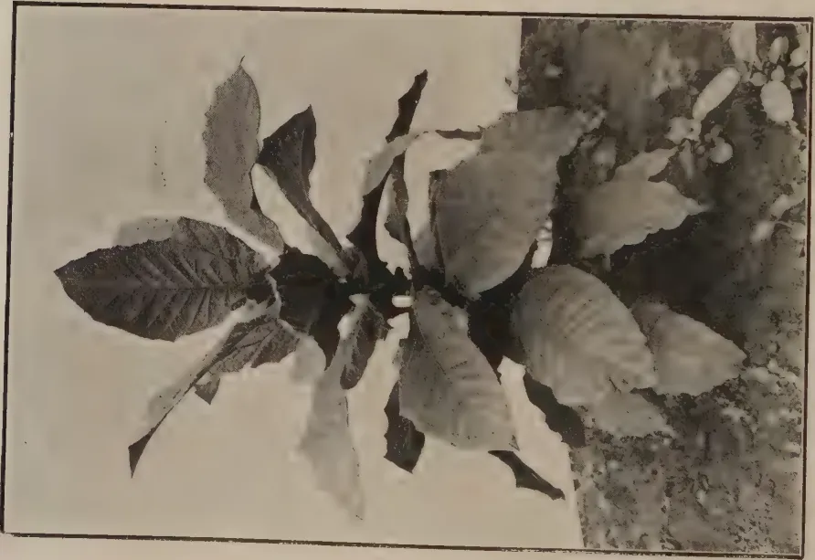
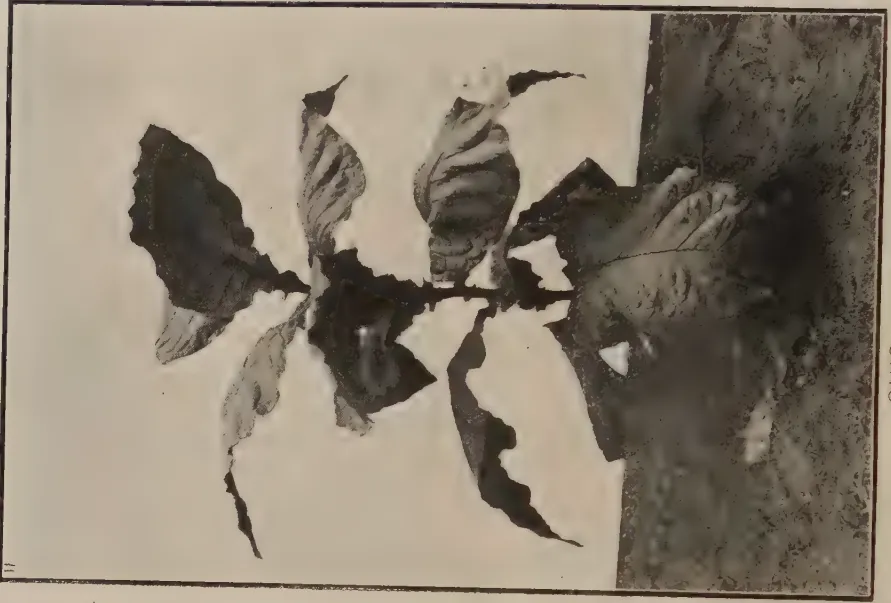
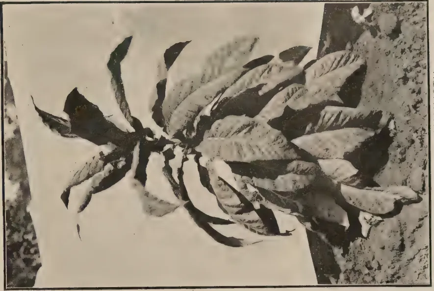
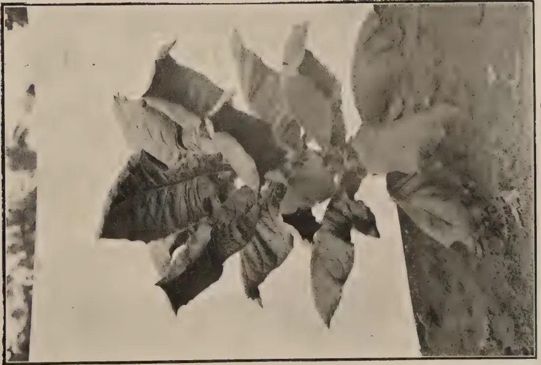

THE
TROPICAL AGRICULTURIST:
JOURNAL OF THE
CEYLON AGRICULTURAL SOCIETY.
VOL. LIII.
PERADENIYA, OCTOBER, 1919.
No. 4.
MANURING OF PADDY.
Several small experiments with manuring of paddy have been made in co-operation with paddy growers during recent years and it has been clearly demonstrated that increased yields can be secured. The actual requirements of the paddy plant under Ceylon conditions have yet to be obtained from scientific experiments designed and carried on over a series of years. This will be possible only upon Experiment Stations which are possessed of an even stretch of land utilizable for paddy experiments and a beginning in this direction is being made at Anuradhapura. In the meantime, however, it is useful to review the information gained from small co-operative experiments and to consider them in the light of trials made in other countries.
In the Central Province, it has been demonstrated that green manuring yields satisfactory increased crops. The burial of green leaves and twigs is common in many parts and the results show that the practice is a sound one. This is particularly so where two crops of paddy are raised annually upon the same fields, and it is probable that the resulting good yields are due in part to the added nitrogenous manures in the form of green leaf and also in part to the better aeration of the soil which takes place after the incorporation of green leaves and twigs.
In recent years the question of the aeration of the soil has been receiving increasing attention at the hands of scientific workers and there is little doubt that its importance in paddy soils which are under water for the greater part of the year has yet to be fully realized. The proper aeration of paddy soils can be effected by ploughing in a comparatively dry condition; but on lands which are cultivated with two crops per annum the
230[OCTOBER, 1919.value of adding green leaves and twigs which help to provide for proper aeration is very considerable. The nitrogen in green manure applied to paddy fields has been found in Madras to be largely dissipated in the form of gas and therefore the paddy is not able to make use of all the nitrogen so applied and it is possible that the increased yields obtained after green manuring are due as much to the better aeration of the soil as to the added nitrogen.
Other manurial experiments have been made with the addition of phosphates in the forms of crushed bones or bone flour. Insoluble phosphatic manures are rapidly decomposed in paddy soils when sufficient organic matter is available. These cheaper forms of phosphates can therefore be applied with advantage and the more costly soluble phosphates dispensed with. They are becoming more popular with the villager every year and increasing quantities are being distributed annually through the agency of Co-operative Credit Societies. From time to time the yields after applications have been reported in the TROPICAL AGRICULTURIST and there is little doubt that the practice of manuring paddy with insoluble phosphates is to be recommended.
In the Northern Province and some other places cattle manure is regularly applied to paddy fields with good results, but where there is not sufficient cattle manure available other organic artificial manures should be used.
At the present time, when every possible increase in the crop of paddy is essential for the colony's welfare no better method can be provided than by application of manure. It has been demonstrated over and over again in practically all provinces that better returns are secured after manuring. There are vast areas of paddy still grown without manure and if all these areas were manured the ultimate outturn of paddy in the colony would be very considerably increased.
The greatest assistance rendered to the paddy cultivator by the Co-operative Credit Societies has been the distribution of manures. More Co-operative Credit Societies must be formed throughout the Colony and more manures distributed. Those interested in securing an increased outturn of paddy in Ceylon should endeavour to assist in the formation of these Societies. Landlords should also see that their tenants are supplied with manure for their paddy cultivation.
OCTOBER, 1919.]231Held at the Council Chamber, Colombo, 29th September, 1919.
The annual meeting of the Ceylon Agricultural Society for the year 1918-1919 was held at the Council Chamber, Colombo, at 12-30 p.m. on Monday, the 29th September, 1919.
His Excellency the Governor SIR WILLIAM MANNING presided.
There were also present :—Hon'bles the acting Colonial Secretary, Controller of Revenue, Government Agent, W.P., the Surveyor-General, Dr. H. M. Fernando, K. Balasingham, O. C. Tillekeratna, J. H. Meedeniya, and A. Sapapathy, Sir Solomon Dias Bandaranaike, Sir Ponnambalam Arunachalam, the Director of Agriculture, Govt. Botanist and Mycologist, Superintendent of Botanic Gardens, Lt.-Col. T. G. Jayawardene, Messrs. Jas. Peiries, H. L. De Mel, C.B.E.; J. D. Vanderstraaten, K. Bandara Beddewela, J. D. Wickramanayake, G. Pandithasekera, Dr. Appaswamy, Mudaliyars J. P. Obeyesekera, W. A. Amarasekera, V. Muttukumar, J. A. Weerasingha, C. H. Samarackkody, S. Weerackkody, L. A. Dasanayake, D. T. Perera, F. D. Samarasingha, Walter Samarasinghe, and the Secretary (Mr. C. Drieberg).
In the absence of MR. FELIX FERNANDO who was down for a question re the Nachchaduwa Colonization Scheme HIS EXCELLENCY made the following reply as likely to be of general interest :—In view of the necessity for increasing the foodstuffs it was thought desirable to have the 500 acres particularly ear-marked for the Colonization Scheme cut up into and 5 acre blocks for lease to cultivators on very easy terms with option of purchase. However, Government was prepared to set aside another 500 acres for an organised Colonization Scheme if found necessary."
The Minutes of the last annual meeting were read and confirmed.
The Secretary read extracts from the Annual Report which was formally adopted.
Statements of Accounts to end of 1918, and to end of August 1919, were tabled for general information.
In submitting his memo. on agricultural reorganization, the Director of Agriculture pointed out that it was drawn up on the lines which had been presented to the Society and supported by it and other agricultural bodies. The proposals now before the meeting were in definite form for the organization of a Board of Agriculture. SIR HENRY BLAKE when forming the Society had the intention that it should eventually grow into part of an Agricultural Department. At that time there was no Agricultural Department in Ceylon and it was the intention that the Society should eventually grow into a Department of Agriculture. The work of the Society had become much more closely associated with that of the Department and he thought the time had come when Agricultural education should form a branch of the
232[OCTOBER, 1919.Department. He further detailed the progress of the Committee of Agricultural Experiments and the formation of Food Products Committees which have now settled upon lines of policy. It was important that the Department should be in touch with all phases of Agriculture and receive advice and assistance from those interested; and the proposed Board of Agriculture, as in other Colonies and India, is to advise Government on all matters pertaining to Agriculture. He found it difficult to bring the Agricultural Society as a body into the scheme as the Society had grown into the Department of Agriculture.
DR. FERNANDO urged that the Society be given some status though he quite agreed with the Director of Agriculture that radical changes were necessary in the personnel of the Board of Agriculture and other Committees connected with agricultural development that had been organized in recent years. He suggested as an amendment that the proposed half-yearly conferences should be meetings of the Society and that two members be nominated by the Society to serve on the Estate Products Committee, and 5 on the Food Products Committee.
LT.-COL. JAYAWARDENE seconded.
HIS EXCELLENCY said the suggestion was not clear. He asked DR. FERNANDO what the functions of the Society would be in the event of the Director's reorganization scheme being accepted. DR. FERNANDO thought that the Society should continue to publish the TROPICAL AGRICULTURIST; supply seeds and plants to members, carry on semi-official investigations, assist in shows and generally assist in the development of native agriculture.
SIR PONNAMBALAM ARUNACHALAM expressed sympathy with what DR. FERNANDO said.
The Director admitted that the TROPICAL AGRICULTURIST was the property of the Society and it could not be alienated without the express sanction of the Society. In view, however, of the fact that Government had given the Society an annual subsidy of Rs. 30,000, and within recent years Rs. 25,000 he thought that the Government had a very large interest in the TROPICAL AGRICULTURIST since it was purchased from savings on votes granted to the Society. The journal itself it was proposed should become the journal of the Board of Agriculture. He saw no difficulty in arranging that the Society shall exist and that the half-yearly Conferences should be open to all subscribers to the journal. The Department should he thought be responsible for all agricultural publications in the Colony. There was no reason why the Agricultural Department should not approach Government for assistance towards shows. Agricultural literature should be scattered broadcast in the Colony and this should be the duty of the Government and should not be left to a Society. He would recommend for favourable consideration the proposals made by DR. FERNANDO of 2 members to the Estate Products Committee and 5 to the Food Products Committee.
HIS EXCELLENCY said that a Society apart from Government would be untrammelled and free to bring views before Government and expressed his willingness to preside at meetings of such a body.
OCTOBER, 1919.]233In reply to enquiry by LIEUT.-COL. JAYAWARDENE the Director said that the question of term of office of nominated members had not been decided.
SIR PONNAMBALAM enquired whether it would not be necessary to alter the Rules of the Agricultural Society.
HIS EXCELLENCY replied there was no question about that, the Rules would have to be modified in accordance with the proposals put forward and suggested the desirability of calling a meeting of the Society at the earliest possible date.
The Director's proposals for the constitution of a Board of Agriculture were adopted.
The Report by the Committee who dealt with the question of the cultivation and manufacture of sugar was submitted by the Director of Agriculture who said there had been some delay in issuing it and suggested that the consideration of the report be put off for the next meeting. This was seconded by MR. BALASINGHAM and agreed to.
HIS EXCELLENCY next presented a gold medal to MUDALIYAR J. A. WIRASINGHE for the good work he had done in the Rayigam Korale in furthering the work of the Society.
(Sgd.) C. DRIEBERG,
Secretary, C. A. S.
Peradeniya, September 30th, 1919.
The last Annual Meeting was held on the 26th September, 1918, with HIS EXCELLENCY the President in the chair. Since then two meetings were held—one at Kandy on 29th January, and another at Matara on 28th June, 1919.
The following subjects came up for discussion :—
Provision of an Agricultural School and Experiment Station for the Northern Province.
Proposals for the Co-ordination and Extension of the Agricultural Services of the Colony.
Grants for Agricultural Shows.
Possibilities of Sugar-cane Cultivation and the Manufacture of Sugar.
Paddy Cultivation under the Tanks from an Economic Standpoint.
Production and Distribution of Food Supplies.
Suggestions for securing a larger Food Supply in the near future.
Suggestions for the Improvement of the Board.
Improvement of Paddy.
Village Agriculture.
Organization of Food Production Committees.
Some Experiences in growing Food Crops.
234[OCTOBER, 1919.There are on the list 810 local and 647 foreign members, making a total of 1,457.
About 280 members were written off the list owing to default of payment of subscription; but there has since been a considerable accession due no doubt to the increased interest in the production of foodstuffs.
The Board was reconstituted as per list appearing in the TROPICAL AGRICULTURIST. MUDALIYAR A. E. RAJAPAKSA, a prominent Member of the Board, who has done much to further Agriculture in the Colony, was created a Mudaliyar of the Governor's Gate. MR. J. A. WEERASINGHA, who has just retired from the post of Mudaliyar of Rayigam Korale, is to-day being presented with a gold medal in recognition of the valuable assistance he has rendered to the Society.
The Board is the poorer for the loss by death, on the 8th September, of Dunuwile Disawa who, in the early days of the Society, took a very active interest in its work and helped to establish the first Co-operative Credit Society under the Society's auspices at Teldeniya.
The staff has been augmented by Government sanctioning the appointment of 14 new Instructors. There are now 25 of these officers in all, who are working in with the Committees dealing with Food Production in the Provinces.
The following is the list of Instructors with their Stations :—
| 1 K. C. Pillai | - Jaffna | 7 V. Ramanathan | - Mannar |
| 2 W. Molegode | - Katugastota | 8 P. B. Kapuwatte | - Harasbedde |
| 3 L. A. D. Silva | - Ratnapura | 9 M. Amarasingha | - Kalutara |
| 4 M. J. A. Karunanayaka | Matara | 10 A. V. Chelvanayagam | Trincomalie |
| 5 A. Madanayaka | - Matale | 11 C. P. Crispeyn | - Kegalla |
| 6 J. R. Nugawela | - Hettipola |
| 12 A. B. Attygalla | - Veyangoda | 19 George Madugalle | Godakawela |
| 13 T. B. Beddewela | - Rattota | 20 N. Tambiah | - Batticaloa |
| 14 V. G. Perera | - Ukuwela | 21 M. B. Wettewe | - Gampola |
| 15 A. C. W. Jayawardene | Madampe | 22 H. C. Peris | - Weligama |
| 16 Walter Perera | - Bandaragama | 23 J. A. Rambukpota | Badulla |
| 17 B. G. Buultjens | - Matara | 24 D. T. J. Weerasuriya | Kalutara |
| 18 C. W. Dangamuwa | Balangoda | 25 Geo. Seneviratne | - Galle |
Government has also recently decided to increase the temporary staff by the appointment of eleven additional officers.
MR. A. C. MACK, who served as Clerk to the Editor of the TROPICAL AGRICULTURIST for seven years, severed his connection with the Society early this year with a view to bettering his prospects. MR. W. A. W. GUNAWARDENA, senior assistant clerk in the Society's office, is filling the acting appointment. MR. V. RAMANATHAN, Agricultural Instructor, Batticaloa, has been transferred to Mannar, and his place filled by MR. N. THAMBIAH.
OCTOBER, 1919.]235With the appointment of additional Instructors the volume of work has increased. The following statement (for the past 12 months) will give some idea of the office work :—
| Letters Inward | ... | ... | 5,144 |
| Letters Outward | ... | ... | 5,225 |
| Endorsements | ... | ... | 1,323 |
| Memos. (reminders, etc.) | ... | ... | 7,724 |
| English Magazines despatched | ... | ... | 23,916 |
| Sinhalese do do | ... | ... | 24,000 |
| Tamil do do | ... | ... | 1,800 |
| Year Book (English) | ... | ... | 1,800 |
| Year Book (Sinhalese) | ... | ... | 2,000 |
| Acknowledgments, receipts, etc. | ... | ... | 2,531 |
Some of the gardens, which were established as demonstration gardens with a special object in view, have been closed down after serving their purpose, and others opened in their place. The following are the gardens now existing :—Balangoda, Bandaragama, Bibile, Godakawela, Harasbedde, Kegalla, Matale, and Weligama.
A new garden is to be started next month at Kuliya-pitiya (Dandegamuwa) in place of the one at Hettipola (closing at the end of this month), which first served as a rotation garden and was recently utilized for testing varieties of castor.
The campaign started with the object of increasing the output of food-stuffs more than doubled the work of the Society, and the strain which it entailed on its Officers has been very great. The large and constant demand for seeds from Members, as well as Government Departments, and the planting districts, has been such as to warrant the appointment of a special staff to cope with the work ; and when it is borne in mind that there are no central sources of seed supply to draw upon, and no facilities for handling and conserving large stock of seed, it is a matter for congratulation that so much has been accomplished under the circumstances. The time has come for entrusting this important work of seed and plant distribution to an organised staff, who should specialise in this branch. For any deficiencies on the part of the Society in this connection I would, in view of the great difficulties referred to, ask for the indulgence of the public.
That there has been an appreciable extension in the cultivation of food-stuffs is evident to any one who moves about the country outside the beaten tracks. This was specially observable during the recent Yala season. The obligation to make the most of available land in the more populated areas has been generally recognised, and the output of vegetables is increasing to a striking extent, as those visiting market places must have observed. During the year, in most places where it has been possible, paddy land has been made to carry two crops.
The larger question of extending the area under paddy by cultivating the undeveloped lands under the tanks is one that hardly comes within the scope of the Society. That it is desirable and possible to exploit these areas, with a view to providing against a repetition of the trouble caused by a shortage of rice, will be generally admitted. It is for Government to decide on its line of action to attain this end.
236[OCTOBER, 1919.One result of the conditions that have obtained for some time past is that people are now less fastidious about the variety of rice they consume. They have, moreover, acquired a taste for locally-raised grain, and have even become reconciled to substitutes for rice. In many outlying parts a ration of Indian corn and beans has proved an excellent diet.
The interest that has been aroused and the assistance rendered by the various Food Production Committees must be specially mentioned, and their continuance on a permanent basis is much to be desired. Many of the Instructors working in co-operation with these Committees have been able to do very useful work.
Beans in Katugastota gardens were badly attacked by a disease attributed by the Government Mycologist to a root fungus (Rhizoclonia) which lives in the soil. He recommends a rotation of crops as the only means of getting rid of it. The same fungus is said to attack the tomato, snake-gourd, and groundnuts.
A report from Baddegama of "Slugs" causing damage to vegetable plots was referred to the Government Entomologist, who states that from the description given he would say that the pest was a cockchafer grub generally called "white grub," which is the young stage of the brown-beetle commonly found buzzing about, attracted by a light, in May and June. These beetles should be captured and dropped into a vessel containing kerosene. The grubs too should be collected and killed after turning up the soil. They are attracted to the soil by the presence of fresh manure or decaying vegetable.
With regard to damage done to coconut palms at Andiambalama the Government Entomologist reported that as the specimens of leaves forwarded were covered with the Aspidiotus palm scale, this insect is most likely responsible for the trouble, though it is probable that the palms are also affected by some disease, or attacked by some insects (such as beetles) at the roots. The scale insect could be controlled by washing with a soap-water solution (1 lb. laundry soap to 1 gallon water). The spray should be applied at least twice, at intervals of 10 days or so. The palms should be manured to assist their regaining their nominal health, and all dead palms should be burnt, and grubs and beetles found at the roots destroyed.
There has been a big demand from various parts of the Island for El-vi (hill paddy) for growing on high lands, chiefly among standing perennial crops, and such quantities as could have been spared from the Ratnapura and Kegalla Districts were secured and distributed to applicants.
In Progress Report No. 73 will be found a reference to perennial rice of Senegal (Oryza longistamina) with an interesting note by Mr. H. L. VAN BUUREN of the School of Tropical Agriculture. Seeds of this were procured with difficulty through the good offices of Mr. Wood, Manager of the Kamanga Nursery, Queensland, and a plot established at the Government Stock Garden where, from the spreading habit of the plant, it now covers a fairly big piece of ground. It has stood both drought and rain very well; but, though highly esteemed for its rice in its native habitat, it has entirely failed as a grain crop so confirming the experience in Australia that it is rather to be looked upon as a fodder plant. In the note referred to above, the analysis of the green talks showed 3 per cent. proteids, 50 per cent.
OCTOBER, 1919.]237carbohydrates, 25 per cent. crude fibre, and 75 per cent. fat. With a view to encourage grain production a new plot has been established by planting out the rice about a foot apart. The Government Economic Botanist, Coimbatore, reports that from the few plants raised from seed received from the Secretary, C. A. S., he was able with much trouble to secure 10 oz. seed. The variety was found to hybridise readily with ordinary paddies, and crosses are being made to secure its vigour and avoid if possible its drawbacks, viz., uneven heading and the shedding of grain. Samples of fodder are being submitted to the Government Agricultural Chemist for his report as to its value.
With a view to raising a stock of bush lima seed for local use a small consignment of the bush varieties was obtained from Burpee of Philadelphia, and small packets distributed among District Planters' Associations, Agricultural Instructors, and others likely to grow them with care. The plants have come up well and are a great improvement on the small bush variety previously introduced. The bean is well worth growing on an extensive scale, particularly at the present time.
A fresh lot of seed of the Chinese cabbage was procured and distributed. This is a hardy plant which is becoming a popular vegetable in the villages.
Buckwheat seed imported from America has come up particularly well, and the plants are much stronger than those previously raised from Japanese seed. This is likely to prove a suitable addition to chena crops at higher elevations.
Through the initiative of MR. L. A. D. SILVA, Agricultural Instructor, Ratnapura, an experiment in the cultivation of Tobacco was carried out at Palawela and has proved a success. The cultivation is now being taken up in the locality. Both cigar and chewing tobacco suitable for the local market have done well.
Trials are being made at various centres with swamp and mountain rice from Japan.
A small plot of elephant grass (Pennisetum macrorum) has been established at the Government Stock Garden. The seed came with the reputation of being a prolific and drought-resistant fodder, richer than green maize, and relished by stock. All these qualities have yet to be proved; but in the meantime at Peradeniya it has proved itself a hardy plant, growing to a height of 6 to 8 feet. The seed is now ripening and propagation by cuttings as well as seed is being done.
The Society is working in the closest co-operation with the Department of Agriculture.
With the increase in the number of Instructors it has become all the more necessary to arrange for the supervision of their work in the Provinces.
C. DRIEBERG,
Secretary, C. A. S.
Peradeniya, 29-9-19.
238[OCTOBER, 1919.In Sessional Paper 1 of 1918 was given in paras 15-42 an outline of the organisations at present dealing with Agriculture, and suggestions were offered in regard to their re-organisation.
This Sessional Paper has been considered by the Planters' Association, the Low-country Products Association, the Committee of Agricultural Experiments and by the Agricultural Society. These Associations, representative of Agriculture in the Colony have unanimously supported the proposals for re-organisation and have expressed a desire for a constructive agricultural policy.
The details of re-organisation have been given careful consideration and the following definite proposals are now submitted:—
It is suggested that a proper Board of Agriculture be constituted. This Board shall be representative of the agricultural interests of the Colony and shall be advisory to the Department of Agriculture and to Government with respect to all matters and questions in connection with the agricultural and other rural industries.
It is proposed that the Board shall consist of an Executive Committee, an Estate Products Committee, and a Food Products Committee. Its constitution is suggested to be as follows:—
HIS EXCELLENCY THE GOVERNOR—President.
THE HON'BLE THE COLONIAL SECRETARY—Vice President.
|
The Hon'ble the Controller of Revenue 2 Unofficial Members of the Legislative Council The Government Agent, Western Province The Government Agent, Southern Province The Government Agent, Central Province The Government Agent, Northern Province The Director of Agriculture The Director of Irrigation |
} Ex-Officio Members |
|
|
not more than 60 Members. |
{ Nominated by HIS EXCELLENCY THE GOVERNOR " " The Planters' Association " " The Low-Country Products Association " " The Estate Agents' Association " " The Food Production Committee |
|
|
and 10 Departmental Members. |
{ Nominated from Members of the Department of Agriculture for the Estate Products and Food Products Committees of the Board. |
The EXECUTIVE COMMITTEE of the Board, which will consider and report upon all Resolutions of other Committees of the Board and upon all matters affecting agricultural policy submitted to it by Government, it is proposed shall consist of the following:—
HIS EXCELLENCY THE GOVERNOR—President.
THE HON'BLE THE COLONIAL SECRETARY—Vice President.
|
The Hon'ble the Controller of Revenue The Director of Agriculture 2 Unofficial Members of the Legislative Council 2 Members nominated by the Estate Products Committee of the Board 2 Members nominated by the Food Products Committee of the Board 1 Member nominated by the Planters' Association 1 Member nominated by the Low-country Products Association |
} 10 Members |
The ESTATE PRODUCTS COMMITTEE will replace the existing Committee of Agricultural Experiments and will consider and advise upon all matters affecting the planting industries of the Colony. It is proposed that it shall be constituted as follows :—
DIRECTOR OF AGRICULTURE.—Chairman.
THE FOOD PRODUCTS COMMITTEE will undertake the work in connection with village agriculture and food production which has in the past been dealt with through the medium of the Agricultural Society. It is proposed that it shall be constituted as follows :—
DIRECTOR OF AGRICULTURE.—Chairman.
The Department of Agriculture to fulfil its obligations to the agricultural interests of the Colony must possess the confidence of the whole agricultural community and must be in close touch with the problems and needs of all classes of agriculturists. By giving representatives of the agricultural industries opportunities of expressing their views on the work of the Department, and on the needs and requirements of agriculture in general, Government is assured that agricultural development and the application of scientific and technical assistance to that development will be directed along sound lines.
The desire of SIR HENRY BLAKE in the formation of the Committee of Agricultural Experiments and in the formation of the Agricultural Society was to secure to the Government Departments dealing with agriculture unofficial advice and assistance. It therefore seems to follow a rational line of development to amalgamate these two bodies into an advisory and consultative Board of Agriculture—similar to those bodies already established in other colonies and now under formation in the Provinces of India.
It is proposed that the Board of Agriculture shall meet as a whole twice annually—once in Kandy in February and once in Colombo in August or September, preference being given to planting matters at the former centre and to village agriculture at the latter.—The business at these meetings shall consist of a consideration of the work of the Department of Agriculture, of the work of the Board's Committees, and of any other matters affecting agriculture which may be brought up for consideration by members.
It is proposed that the Executive Committee of the Board shall meet twice annually, but it shall be liable to be summoned more frequently by the President if matters of agricultural importance require consideration. The Office Assistant of the Department of Agriculture might be Secretary of the Executive Committee and of the Board.
240[OCTOBER, 1919.The Estate Products Committee shall meet six times a year at intervals of two months. The Manager of the Experiment Station, Peradeniya, might be Secretary of this Committee.
The Food Products Committee shall meet four times a year at intervals of three months.
It is proposed that all Ex-officio Members of the Board not specially assigned to Committees of the Board shall be entitled to be present at any meeting of the Estate Products and Food Products Committees.
It is further proposed that all meetings of the Full Board and of the Estate Products and Food Products Committees shall be open to the Press, and to visitors interested in Agriculture.
At full meetings of the Board specified as Special Conference meetings visitors will be allowed to take part in the discussions, but will not be allowed to vote upon any Resolution before the Board.
All Resolutions passed by the Full Board or by the Estate Products and the Food Products Committees shall be subject to further consideration from the Executive Committee of the Board before submission to Government. Matters may also be submitted by Government or the Department of Agriculture direct to the Executive Committee of the Board for advice. A précis of the proceedings of meetings of the Executive Committee of the Board shall be supplied to the Press for general information.
The Estate Products and Food Products Committees should be afforded the powers of dividing into sections or sub-committees for the purpose of dealing with specific crops or problems, and of co-opting members for such special work. For example it is felt that the Estate Products Committee might desire to form a sub-committee to deal with Rubber research and the Food Products Committee to form a sub-committee to deal with elementary agricultural education.
The detailed proposals now submitted are shown in the following diagram :—
HIS EXCELLENCY THE GOVERNOR—President.
THE HON'BLE THE COLONIAL SECRETARY—Vice-President.
10 Members.
5 Members (4 Revenue Officers and Director of Irrigation).
DIRECTOR OF AGRICULTURE—
(Chairman).
30 Members.
5 Departmental Members.
DIRECTOR OF AGRICULTURE—
(Chairman).
30 Members.
5 Departmental Members.
F. A. STOCKDALE.
26-8-19.
OCTOBER, 1919.]241This Committee was appointed by the BOARD OF AGRICULTURE to consider the prospects and possibilities of sugar-cane cultivation and of the manufacture of sugar in the Colony of Ceylon.
2. The entire dependence of Ceylon for its supplies of sugar upon imports when it appeared to possess lands capable under efficient management of producing sugar not only for its own requirements but also for export suggested that enquiries should be made into its possibilities as a sugar producing country. The known desire of the Imperial authorities to secure the production of an adequate supply of sugar within the Empire and the prospect (since realized) of a protective tariff being afforded to Empire grown sugar clearly indicated that the fullest investigation possible was desirable.
3. The Committee has held three meetings. It has considered details concerning former sugar-cane cultivations and some of its members have closely investigated the prospects of sugar-cane cultivation along the banks of the Ging-ganga, at Kalupahana in the North-Western Province, under irrigation in the North-Central and Southern Provinces and under the proposed Allai extension scheme in the Trincomalie District.
4. Sugar-cane cultivations were carried on in Ceylon during the early part of last century. These undertakings have usually not been very successful and have either closed or been transformed. The Peradeniya Estate was at one time reputed* to be paying satisfactorily, but was subsequently planted in other products. Similarly the Baddegama Estate in the Southern Province has within recent years replaced the whole of its sugar-cane with rubber and tea with more profitable result. The following notes abstracted from the Observer Handbook and Directory give information in regard to the early sugar-cane cultivation:—
The systematic cultivation of sugar-cane was previous to the present century attempted twice on a large scale in Ceylon in the neighbourhood at Kalutara. MR. WINTER planted and grew canes near to Kalutara in 1826 and manufactured sugar therefrom but transferred his operations to Baddegama near Galle in 1840 upon an old indigo estate that he purchased. MR. TYTLER was employed in cane cultivation for MESSRS. ACLAND AND BOYD in 1837-40 in Dumbara and MESSRS. BARING BROS. opened Peradeniya Estate in sugar in 1840. Between 1842 and 1846 large sugar plantations were formed in the Southern Province, viz., Oodagama on the Gintara river by BARON DELMAR, Hahanngam near Galle by BARON DELMAR, Telicada on the Gintara river by MESSRS. FAULKNER of Liverpool, Kohila Wagura at Ambalangoda by MESSRS. TINDALL & Co., Paraduwa near Matara by LORD ELPHINSTONE; Wilpitiya on the Matara river by MR. GREG. Small plantations were opened near the Gintara river by MR. A. ORR and at Watteraka by MR. PALMER. There were also several sugar plantations in the Western Province, viz., Dalloopatagedera, Katukanda, Dambawinna and Etgala.
*SIR SAMUEL BAKER. Eight years in Ceylon, 1874.
242[OCTOBER, 1919.In 1860 however the only places where systematic cane cultivation was being carried on were Paraduwa, Baddegama, Etgala, and Peradeniya. Within a few years after 1860 the only estate carrying on sugar cultivation was Baddegama in the Southern Province.
The reasons assigned to the previous failures of sugar-cane ventures were the poor quality of the juice of canes grown in the Southern Province. Plantations were situated in regions receiving a rainfall of between 100 and 150 inches of rain and juices were said to test between 6.9° Beaumè. In the Western Province coconuts were found to grow better than canes and rapidly replaced the cane cultivation after 1860.
5. At the present time, sugar-cane may be found growing all over the Colony. It is generally found growing in small patches or even as isolated plants near to dwelling houses of villagers and is used for chewing—particularly at festivals or during the hot season.
6. For growing sugar-cane for the manufacture of sugar there are at present only two centres. These are at Nagoda in the Galle District and at Kalupahana in the Uva Province. At Nagoda and other villages situated on the banks of the Ginganga about 30-40 acres are under sugar-cane cultivation while at Kalupahana a similar area is also grown. The cane is ground in small bullock or hand-power mills and a raw-sugar prepared. At the former centre some clarification with lime is carried on and the sugar finds its way to the Galle Market as a fine grain raw sugar. At the latter centre, the syrup is run into wooden moulds and cakes of cane jaggery produced. There is a demand for both sugars, the latter being considered a fancy sugar and commanding prices somewhat in excess of the ruling market rates for sugar.
7. Sugar is also prepared from palms—coconut, kitul and palmyrah. No statistics are available as to the actual quantities of sugar so produced, but the following figures show the number of palms of each kind registered by the Excise Department for tapping:—
| 1915. | 1916. | 1917. | ||
|---|---|---|---|---|
| Tapped for sweet toddy | Coconut | 64,508 | 78,651 | 110,604 |
| Kitul | 64,208 | 65,110 | 69,030 | |
| Palmyrah | 52,221 | 59,403 | 62,203 | |
| Tapped for fermented toddy | Coconut | 141,856 | 151,700 | 162,208 |
| Kitul | 23,604 | 34,179 | 29,715 | |
| Palmyrah | 77,926 | 96,208 | 91,846 | |
| Tapped for Distilleries | Coconut | 366,926 | 302,755 | 329,722 |
These palms yield in Madras as follows:—Coconut 35 gallons of toddy per season, Kitul 70 gallons per season, and Palmyrah 45 gallons per season. These averages are also secured in Ceylon.
8. Small quantities of jaggery from coconuts may be expected to be continued to be made from trees already in tapping, especially when the demand for toddy is slack. There is, however, little immediate prospect of any considerable increased preparation of sugar from the coconut especially in view of the assured demand for coconut products such as oil, copra, and desiccated nuts. Considering the cost of labour and the difficulties involved, there is every possibility that when coconuts go out of tapping, encouragement should be given to the produce of copra and nuts rather than exploitation for sugar.
OCTOBER, 1919.]2439. Kitul is found scattered over the hills and foot hills of the Colony. The palms are not gregarious and their exploitation for the manufacture of sugar on any scale would be impracticable. Kitul jaggery is greatly appreciated in the Central, Sabaragamuwa and Southern Provinces and commands a price in excess of the price for other jaggeries. The manufacture of certain quantities of this jaggery as a cottage industry will continue and can be improved. It is also possible that plantations of Kitul palms might be worthy of experimental trial, and that consideration might be given to the possibility of simplifying the methods of securing tapping licenses.
10. It is estimated that there are 7,391,800 palmyrah palms in the Jaffna District and of these 154,049 are used for tapping for toddy for direct consumption. It is therefore obvious that in the palmyrahs of the Northern Province there is a large quantity of sugar-producing material available. The Ceylon Sugar Refineries Co., Ltd., was floated to exploit this sugar resource of the Colony but has owing to a variety of causes gone into liquidation. This Company was unable at any time to secure more than 10,000 gallons of toddy per diem and had to import large quantities of raw material from India for refining purposes. The limitation of the quantity of toddy available was in part due to the limited number of tappers available. It is asserted in Jaffna that the cost of procuring toddy varies from 15-30 cents per gallon at various times during the season and at these rates it would appear that the prospects of exploiting palmyrah in the Jaffna Peninsula on a large scale are not particularly promising. Subsequent enquiries indicate that the cost might be reduced and it is possible that a small industry could be started if improved methods of jaggery manufacture are introduced.
In Jaffna the toddy tappers may receive up to one half of the sweet toddy drawn and it is this share that is at present largely converted into jaggery.
11. The demand for jaggery in the markets of Ceylon is in part to meet a "fancy" trade. Jaggery is still used in the villages of the Colony but so common has imported white sugar become throughout the Island that there is every prospect that any development in sugar production and manufacture in the Colony must aim at a high grade raw-sugar upwards through the white syrup sugars to the white crystal grades. The market demands a fine grain, but does not differentiate in any degree between syrup sugars and crystals.
12. The manufacture of sugar from sugar-cane could be improved at the two centres at which it is grown. Considerable improvements have been made in India in the small mills being used for crushing canes and in the manufacture of jaggery. Oil and power driven mills give a much greater yield of juice than do bullock-driven or hand-worked mills. The increase is, however, insufficient to pay if a better class of product is not made. Improvements have therefore been made to the evaporating pans and to the furnaces employed. Considerable economy has been effected by these latter improvements and the question of crystallization-in-motion is now being considered by some of the Indian authorities.
244[OCTOBER, 1919.]13. At Kalupahana near Haldummulla, sugar is grown and manufactured, mainly by estate labourers and there is every prospect that improvements in crushing and manufacture could readily be accomplished. The area under sugar cane is composed of small blocks of the Bourbon variety of cane. About 40 acres in all are at present cultivated and the crushing is carried out by 7 vertical two-roller mills—4 with wooden rollers and 3 with iron rollers. The mills are of the most primitive type and give but a poor extraction. The cultivation is of the neglected type of peasant cultivation—giving estimated yields of 7.9 tons of canes per acre. It could be considerably improved and yields of 14-16 tons of canes per acre should be easy to secure. The jaggery is produced by boiling down in open pans and by then running it into wooden moulds. It fetches a good price and there appears to be a fair demand for it from the boutiques. Immediately around this centre there is not much prospect of considerable extension of sugar-cane cultivation. The country, is broken and rocky and difficult to work, but lower down towards the low-country in the direction of Kongala Bintenne Korale and below Haldummulla towards the province of Sabaragamuwa there are considerable tracts of land which should be capable of being cultivated in sugar-cane.
14. Along the banks of the Ginganga it is estimated that up to nearly 300 acres were at one time under cultivation with sugar-cane. MESSRS. WINTER and BOWMAN were the last European capitalists to grow sugar-cane on a commercial scale. Their estate at Baddegama was begun about 1840. The maximum acreage grown was about 100 acres and an additional 50 acres was cultivated by small growers and the produce brought to the estate mill for crushing on a share basis. Sugar-cane cultivation was abandoned in 1912—the estate having been gradually planted up with tea and rubber. The reasons for this abandonment were the increasing costs of labour, the difficulty in securing fuel, the decrease in the prices for sugar and the greater profits to be derived from tea and rubber cultivations. The variety of canes cultivated were Bourbon and Striped Singapore and the yields averaged 30 cwt. of sugar per acre from plant canes and 15-20 cwt. of sugar per acre from ratoons. The rainfall at the estate averaged 120 inches and juices were not very rich in sucrose—the average registering only about 7° Beaumè. Planting and cropping was carried on throughout the year except during the heavy rainy weather of January and May and during the dry weather of February-March. The average cultivation costs approximated to Rs. 80.00 per acre for plant canes and Rs. 55.00 for ratoons. A regular resident labour force was not used, but the average number of labourers employed averaged about 100. The mill consisted of a 3-roller mill, sulphur box, clarifiers, subsidisers, bag filters, concreter trays, vacuum pan and centrifugals run by a separate engine. Its capacity was about 25 cwt. of sugar per diem and the manufacturing costs worked out at about Rs. 40.00 per ton. The grades of sugar made were moist white and lower brownish grades, and when abandonment was decided upon the average price realized for all grades was about Rs. 13.63 per cwt. This sugar was all sold locally. The profits in the earlier days appear to have been satisfactory, but later these dwindled and led to eventual abandonment of sugar cultivation for the more profitable tea and rubber. There is now no land on this estate that would be available for sugar-cane cultivation.
OCTOBER, 1919.]24515. MUDALIYAR JAYASINGHE of Nagoda was also a pioneer in sugar-cane cultivation and made good profits from the undertaking. He had a steam mill. He grew canes on his estate and also crushed canes produced by small growers on a share basis. The mill was allowed to go into disuse with the decline in the price of sugar and is no longer available for sugar manufacture. At the present time about 10 acres of sugar-cane are grown on the estate and the produce is dealt with by a small bullock mill and open pans. A fair quality brown raw sugar is produced and this finds a ready sale in the Galle market. The land is of fair quality and canes are rotated with sweet potato, paddy and dry grains. Plant canes and two ratoons crops are grown and it is stated that the yield of sugar per acre averages 32 cwt. from plant canes and 20 cwt. from ratoons. The mill at present used has a capacity of 2-2½ tons of sugar per month. Some clarification with lime is practised but this is very crudely carried out.
16. At one time near Nagoda, along the banks of the river, every patch of "owita" land was under sugar-cane—the same being either crushed by the grower in a small mill or sent for manufacture on the basis of one-third of sugar obtained for the manufacturer and two-third for the grower, to the more powerful mills belonging to BOWMAN and WINTER or to MUDALIYAR JAYASINGHE. The industry was a profitable one, and with improved machinery or good prices could readily be revived.
17. It is estimated that there are upwards of 600 acres of owiti land along the Ginganga river that could be planted in sugar-cane and with arrangements for transport and the provision of a modern mill on a small scale a promising field for again establishing sugar in the Colony presents itself.
18. For the improved manufacture of palm sugars the most promising field is in the North where there are large numbers of palmyrals available. The fuel question will be a difficulty but this could be overcome if a centre near the railway could be selected. It is also possible that other centres might be found in the Central, Western and Southern Provinces with prospects of success.
19. Sugar-cane cultivation can be undertaken in districts receiving an adequate rainfall without irrigation or in the drier zones under irrigation. A rainfall of less than 75 inches per annum unless it is very evenly distributed would be considered to be insufficient for sugar-cane cultivation.
20. In the one-third of the Island which is adequately watered are to be found the existing and flourishing industries of tea, rubber and to some extent coconuts. It is unlikely that sugar would be able to compete with these established cultivations on lands already devoted to them. There are, however, areas within this well-watered portion of the Colony which would be capable of growing sugar-cane with profit. There are areas, for instance, in the Kurunegala District of the North-Western Province, in the Sabaragamuwa Province, in the Southern Province, in Uva, and along the banks of the Mahaweliganga river that offer possibilities for this cultivation. It must not however be thought that the cultivation of sugar-cane in these areas would be without
246[OCTOBER, 1919.difficulties. Some of the chief of these difficulties would appear to be:—
In spite of these difficulties, there appears to those members of the Committee acquainted with sugar-cane cultivation and the manufacture of sugar considerable areas of available land within the well-watered area of the Colony capable of satisfactory exploitation by men well acquainted with the practical side of modern sugar cultivation and manufacture.
21. In the two-thirds of the Colony which receives less than 75 inches of rain, irrigation would have to be resorted to. In the Northern part of the Colony cane might be grown by small holders, as in India, with well irrigation. In other parts, there are irrigation works under which large areas of land are still unutilized for cultivation purposes. These works unless they are fed by an extensive river system are unlikely to retain sufficient water in the dry season. It is during this dry season that irrigation water for sugar-cane would be most required. The capacity of the various tanks has been calculated for paddy cultivation—a cultivation that is largely carried out with the assistance of the rains of the North-East Monsoon season. Calculations as to water requirements have been made with the Director of Irrigation and there are tanks under which the cultivation of sugar-cane could be undertaken. The details of the Allai Extension scheme in the Trincomalee District have been investigated. The land appears to be well-suited for sugar-cane cultivation, transport would not be difficult and shipment for export to Colombo by the coastwise steamer service or by larger steamer to other countries could be provided for.
This scheme offers out considerable possibilities and is worthy of investigation by persons interested in the production of sugar within the Empire. Not only can the existing paddy cultivation be retained in the extension scheme but provision can be made for an extension of this cultivation in addition to that required for sugar-cane on a fairly large scale. Canes grown under irrigation at Anuradhapura Experiment Station have given yields of 20-22 tons per acre and it is probable that with implemental tillage and with good cultivation and manuring, yields in excess of these figures can be secured. At Ganewatte, in the North-Western Province within the 50-75 inch rainfall area crops of 25-28 tons of cane have been grown without irrigation.
22. Your committee however cannot recommend that large areas under existing tanks should be alienated solely for sugar-cane cultivation. The requirements of the Colony for locally produced foodstuffs is very great and every effort must be made to cultivate foodstuffs—especially paddy—on lands suited to such cultivation. It is desired however to emphasize that sugar is an important article of food on which the Colony entirely depends for foreign supplies and that in Java a satisfactory rotation of sugar with paddy and other food-crops has been devised to the material advantage of cultivators. The Allai extension scheme differs from other irrigation schemes in the Colony in important respects and appears to be worthy of development for sugar-cane cultivation.
OCTOBER, 1919.]247ANALYSES OF CANES.23. It is often urged that one of the difficulties in regard to sugar-cane cultivation in the Colony is the relatively poor quality of the juices. The juices of sugar-canes grown in lands situate within a few degrees of the Equator with a well-distributed rainfall are not generally very rich in sucrose. This is common when there is no marked or extended dry period in which the canes may ripen. Some analyses have been made during the year, but the series has not yet been completed. Canes at Peradeniya do not as a rule show rich juices but better figures have been obtained from canes grown in the low-country where a well-marked dry season is experienced. Sugar-cane juices in Ceylon are poor, but with the modern improvements in machinery and the sugar-house the difficulty of making high grade sugars from such juices can be overcome.
IMPORTS.24. The imports of sugar into the Colony have been as follows during the past few years:—
| Country from which import was made. |
1913 | 1914 | 1915 | 1916 | 1917 |
|---|---|---|---|---|---|
| Cwt. | Cwt. | Cwt. | Cwt. | Cwt. | |
| Sugar, unrefined. | |||||
| United Kingdom - | 2 | ||||
| British Colonies, British India - |
10,859 | 9,574 | 9,070 | 8,897 | 3,078 |
| Foreign countries, India Exc. British - |
21 | 17 | 4 | ||
| 10,882 | 9,574 | 9,087 | 8,901 | 3,078 | |
| 1913 | 1914 | 1915 | 1916 | 1917 | |
| Sugar, refined or candied:— | |||||
| United Kingdom - | 2,854 | 1,957 | 567 | 272 | 12 |
| British Colonies:- | |||||
| British India - | 6,698 | 3,090 | 4,877 | 2,499 | 6,931 |
| Maldivé Islands - | 2 | ||||
| Egypt - | 14,861 | ||||
| Hong Kong - | 117,525 | 83,243 | 77,067 | 75,581 | 33,860 |
| Mauritius - | 11,668 | 59,394 | 34,174 | 319 | 1 |
| New South Wales - | 506 | 951 | 1,670 | 1,897 | 1,175 |
| South Australia - | 60 | 100 | 10 | 1,668 | 940 |
| Straits Settlements - | 13,608 | 5,696 | 13,387 | 72,217 | 167,357 |
| Victoria - | 810 | 150 | 27 | 242 | 144 |
| Western Australia - | 560 | 1,710 | 238 | 598 | |
| Burma - | 1 | ||||
| Natal - | 1 | ||||
| Foreign Countries | |||||
| Austria - | 17,207 | 46,949 | |||
| Belgium - | 6,409 | 3,990 | 249 | ||
| China - | 8,394 | 24,528 | 22,933 | 898 | 353 |
| France - | 200 | 1 | |||
| Germany - | 704 | 800 | 101 | ||
| Holland - | 150 | ||||
| India Exc. British - | 5 | ||||
| Japan - | 1,119 | 29,801 | 22,808 | 22,872 | |
| Java - | 339,056 | 237,669 | 228,958 | 180,209 | 128,928 |
| 527,378 | 470,378 | 430,573 | 359,463 | 362,574 | |
The majority of the imports come from countries outside the Empire—Hong Kong and the Straits Settlements above specified being solely shipping ports. It therefore appears desirable that every encouragement possible should be given to sugar cultivation within the Colony. Not only is there the local demand to supply but there is also a demand in India for large imports of sugar—met at present by sugar from Mauritius and Java. The prospects for sugar are now considerably brighter than they were before the war and with an Imperial preference on Empire-grown sugar there is every possibility for an extension of sugar growing. This Colony should aim at producing at least its own requirements and later at having sugar available for export.
25. Your committee after careful deliberation would make the following recommendations:—
1. In order to ascertain whether improvements can be effected in the preparation of local jaggery two sets of pans of improved types should be secured from India and erected in central places in Jaffna and in the Central Western or Southern Provinces. These pans should be worked experimentally at the beginning and later leased to registered co-operative societies or individuals on lines similar to those adopted in Madras and Mysore.
2. That an improved mill and sets of pans should be erected in the Kalupahana cane-growing area with a view to improving the output from that area and with the object of securing reliable figures for future work.
3. That experimental cultivation of sugar-cane under tank irrigation be undertaken by Government in the dry zone on a sufficiently large scale to demonstrate its commercial possibilities and to warrant the erection of a small power mill and improved pans.
4. That Government be asked to make enquiries in regard to the possibility of erecting a small modern mill for sugar manufacture on a suitable site on the Ginganga river with a view to reviving the industry that has died out from that locality. It is possible that there are over 600 acres of owiti lands in this area suited to sugar-cane cultivation, of which some 400 acres could be cropped annually. If a sufficient guarantee could be obtained for the cultivation of a definite area under sugar-cane annually the erection of a small factory on a co-operative basis would be warranted. The peasants along the banks of the Ginganga are used to the cultivation of sugar-cane and understand its cultural requirements. With encouragement, it is felt that the industry can be revived and despite the present high cost of machinery should prove to be a commercial success.
5. That Government be asked to favour the cultivation of sugar-cane within the Colony as far as possible and to consider the possibility of granting loans on easy terms for the erection of the necessary factories—large or small. It is urged that these loans should be for fairly long periods and with low rates of interest. In Mysore, the Government in order to encourage sisal cultivation are offering, when a sufficient acreage has been taken up and planted with sisal either to erect factories on Government account or on a co-operative purchase system. Arrangements on similar lines for sugar-cultivation in this Colony would undoubtedly provide that stimulus which is essential for development.
OCTOBER, 1919.]2496. That Government be asked if it could specify the terms under which it would be prepared to lease lands for sugar-cane cultivation under tanks in the drier zones of the Colony. It is thought that capital could be interested in sugar-cultivation at the present time and if leases were given on a sufficiently large scale and with a sufficient guarantee, development would be possible. It is thought that a rotation of crops could be carried out and that it might be stipulated that at least one half of the area leased to any company or individual under irrigation works for sugar-cultivation should be cultivated annually with paddy or other food crops.
| Sgd. F. A. STOCKDALE | Sgd. A. W. WINTER |
| " H. M. FERNANDO | " A. W. BEVEN |
| " H. L. DE MEL | " T. G. JAYAWARDENE |
| " O. C. TILLEKERATNE | " E. D. BOWMAN |
| C. DRIEBERG, (Secretary). | |
Minutes of Meetings of:—
A.—July 17th, 1918.
B.—November 12th, 1918.
C.—August 21st, 1918.
D.—Paper by Mr. N. Wickramaratne on "Sugar-cane growing in Ceylon."
Minutes of a meeting held on July 17th, 1918.
Present.—F. A. Stockdale (Chairman), M. K. Bamber, A. W. Beven, H. L. De Mel, C.B.E., A. W. Winter, Hon. Mr. O. C. Tillekeratne, Lt.-Col. T. G. Jayawardene, Hon. Dr. H. M. Fernando, and C. Drieberg, Secretary.
The Chairman explained the objects he had in view when he asked the Board of Agriculture to appoint a committee to go into the matter of the possibility of sugar cultivation and manufacture in the Colony. He said that the matter was one of some difficulty and the fullest enquiries would be required before a definite conclusion could be arrived at.
MR. A. W. WINTER explained to the Committee the experience he had with sugar at Baddegama. He said that the yields of sugar were approximately 30 cwt. per acre from plant canes and 20 cwt. from ratoons. He said that white sugar would pay satisfactorily at Rs. 12 per cwt. and jaggery at Rs. 9. He thought that with modern machinery 10% increased yields could be secured in the factory. He said that at Ganewatte yields of 30 cwt. from plant canes could be anticipated. He thought that the juices there would be richer than at Baddegama where juice averaged 7° Beaumè and ranged from 6 to 9° "Beaumè." The canes cultivated were the Bourbon and Striped Singapore. He said that the difficulties in the way of sugar-cane cultivation were capital and land.
It was concluded after discussion, that lands at Haldummulla, Nachchaduwa and on the Wellawa right bank scheme should be investigated and the lands under the Allai Tank scheme near Trincomalee.
MR. WINTER thought that if land were found suitable or available a beginning could be made with Rs. 60,000. There was some machinery at Baddegama that could be utilized. In settling upon any area to begin operations the future extension must be kept in view. On estate lines a beginning could be made with 300 acres but extension up to 3,000 acres would have to be anticipated. Transport facilities would have to be gone into carefully.
250[OCTOBER, 1919.The Chairman thought that every effort should be made to make sugar a peasant's industry. A factory with a nucleus of some hundreds of acres would be able to purchase canes from peasant cultivators and thereby encourage small cultivators. In the Southern Province the mills there grind the canes and manufacture the sugar, of the sugar going to the grower and to the mill.
The meeting then terminated, the CHAIRMAN and MR. WINTER undertaking to make enquiries into the sugar growing at Haldummulla and around Anuradhapura.
Confirmed
F. A. STOCKDALE,
12-11-18.
Chairman.
Minutes of a meeting held at the Council Chamber on Tuesday the 12th November, 1918.
Present :—Mr. F. A. Stockdale, Director of Agriculture (in the Chair), the Hon'ble Dr. H. M. Fernando, the Hon'ble Mr. O. C. Tillekeratne, Lieut.-Col. T. G. Jayawardene, Messrs. M. Kelway Bamber, A. W. Beven, E. D. Bowman, A. W. Winter, H. L. De Mel, and C. Drieberg (Secretary). Mr. C. F. S. Baker, Director of Irrigation, was also present.
Minutes of the previous meeting held on July 17, 1918, were read and confirmed.
MR. WINTER.—The land available for sugar in Baddegama was about 600 or 650 acres subject to occasional floods which vary from 1 to 6 feet but do not remain for more than 10 or 12 days.
Paraduwa lands had to be abandoned owing to floods which occur during both monsoons. There was little prospect of reviving the sugar industry in Baddegama owing to cost of labour as there was a lot of work available on Estates which was not so hard as the work on a sugar plantation.
He did not think there was much of an opening for sugar near Haldummulla but there would be lower down towards Bintenne under tank irrigation. The difficulties would be the fever and high cost of transport.
MR. BAKER.—Land under the new Kirindioya right bank scheme has all been blocked out for paddy ; labour for paddy cultivation is scarce in the district.
MR. WINTER.—If sugar was cultivated in the far South, transport will have to be by sea owing to the high cost of transport by road.
DR. FERNANDO.—The railway rates would even be high for transport from Nachchaduwa.
DIRECTOR OF AGRICULTURE.—In Mauritius considerable rail transport both of canes and sugar takes place. Irrigation water is also paid for according to quantity of water used.
MR. WINTER.—3,000 or 4,000 acres would be necessary to work on a proper commercial scale. He would advise that a beginning be made with 500 and the area gradually increased
OCTOBER, 1919.]251Cultivation would be on dry farming principles, not as in paddy. Planting should begin with October rains, and irrigation come in from February, say every 10 days. He preferred a sandy clayey soil not too heavy a clay.
DIRECTOR OF IRRIGATION.—The average rainfall at Nachchaduwa in October was about 9 in. There was rain during the S. W. monsoon too. about 6 in. was the average rainfall for April.
MR. BAMBER.—Some water would be needed before October to begin cultivation as the land would otherwise be too hard to work.
DIRECTOR OF IRRIGATION.—There was some rain more or less throughout the year at Nachchaduwa, but April, October, November, December and January were the best months.
MR. WINTER.—It would be necessary to replant every 3 or 4 years.
DIRECTOR OF IRRIGATION.—5,250 acres were available at Nachchaduwa for sugar assuming that no more water is required than estimated by the Department of Agriculture, viz : 40 in. a year. He estimated that the water rate for sugar may be put down at Rs. 7 per acre. (It was Rs. 4 for paddy land of which there were 7,000 or 8,000 acres available). A Trinity gauge should be put in and water charged as per acre foot.
DIRECTOR OF AGRICULTURE.—In Mauritius the rate worked out at nearly Rs. 20 per acre.
MR. WINTER.—At Ganewatte the rate was only Re. 1 per acre.
The growth of sugar-cane at Ganewatte was surprising. It stood the drought well.
It was possible to extend the cultivation up to say 1,000 acres if private owners co-operated.
The average rainfall was about 60 in.
Though the Deduruoya dried up the sugar-cane survived.
The cane at Ganewatte would be harvested in December and weighed to get an idea of yield, and he intended to press and evaporate to ascertain sugar content.
MR. BAMBER offered to give Mr. WINTER a hydrometer and would undertake to analyse the juice.
DIRECTOR OF AGRICULTURE read a communication received from the Director of Irrigation and stated that in Mauritius sugar required including rainfall about 90 in. of water for the year. Cuba and the West Indies required about the same.
Queensland had no irrigation and depended on rain : Egypt 70 in. and practically no rain : the same in Peru.
If the rainfall was 50 in., 40 in. of irrigation water should suffice.
He was applying for Madras and Mysore figures.
DIRECTOR OF IRRIGATION.—The difficulty will be how to prevent cultivators using more water for the irrigation of sugar than the amount estimated by the Director of Agriculture to be necessary.
DR. FERNANDO said it would be necessary to measure the issue of water and charge for it.
252[OCTOBER, 1919.DIRECTOR OF IRRIGATION.—All irrigable lands whether cultivated or not have to pay the water rate ; it would be a matter for Government to decide whether only the areas cultivated for sugar should be charged the rate.
The 5,280 acres of land estimated to be available for sugar included land considered suitable for coconuts—for which the water rate was fixed at Rs. 3.
In the case of MOLESWORTH's lands mentioned by Mr. BAMBER, it would be necessary to construct an anicut if river water was to be used for irrigation.
The land was liable to be flooded with brackish water at certain seasons.
DIRECTOR OF AGRICULTURE said that Natal had produced a record crop even after severe floods. The floods were 10 feet deep but the canes were approaching maturity.
Mr. BAMBER mentioned the Allai scheme.
DIRECTOR OF IRRIGATION said that Government had not sanctioned the extension of this scheme under which it was proposed to feed the Allai tank by two channels which would be flood outlets of the Mahaweli.
Mr. WINTER thought a high water rate would swamp any attempt at a sugar industry.
DIRECTOR OF AGRICULTURE thought sugar could stand a big capital cost if worked on a large scale.
DIRECTOR OF IRRIGATION said the question as to the amount of water required for sugar was the crux of the whole matter.
Mr. BAMBER hoped that Allai lands had not to be ruled out as there were practically 2,500 acres clear of timber and suitable for mechanical ploughing.
Mr. WINTER said he preferred jungle land for sugar. He favoured the idea of a sugar expert being engaged, as the Director of Agriculture could not be expected to give up his time for special work.
DIRECTOR OF AGRICULTURE thought a sugar expert might help if he had extensive practical experience in both field and factory experience.
DIRECTOR OF IRRIGATION.—The question to be decided is whether the water would be sufficient in any area where sugar was to be tried. We must be positive of this.
Mr. BAMBER.—Though the whole 5,000 odd was reserved for sugar not more than would be under cultivation at a time.
DIRECTOR OF AGRICULTURE.—In Mauritius the land was practically cropped continuously, and cultivation from ratoons carried on up to the 4th and 5th year, after which the soil would be turned over and planted afresh. The land was fertilised with cattle manure for the first crop. In wet districts the ratoons sometimes got an application of artificial manure. In the dry districts where the soil was volcanic this was not found necessary.
DIRECTOR OF IRRIGATION.—At Rugam there would be scarcity of water in dry weather.
DIRECTOR OF AGRICULTURE.—It would be possible to rotate sugar with paddy. In Java rotation was a matter of compulsion. After 2 crops of sugar the cultivator had to grow legumes and then paddy.
DIRECTOR OF IRRIGATION.—Innamadu tank was not complete and would not be for some time. There would be about 11,200 acres of irrigable land eventually, but the present scheme is estimated to irrigate 8,700 acres.
OCTOBER, 1919.]253The irrigating capacity or irrigation schemes is based on the amount of water required for wet weather crops.
DR. FERNANDO said that paddy cultivation in Batticaloa and Tissa began after the rains—starting about February. The whole cultivation (2 crops) practically occupied 6 months. In Batticaloa the cultivators avoided the wet weather for fear of floods.
DIRECTOR OF AGRICULTURE read an extract from SIR SAMUEL BAKER—sent to him by LT.-COL. JAYAWARDENE—in which he expressed his doubts of the success of sugar in Ceylon.
DIRECTOR OF AGRICULTURE mentioned that in Gwalior sugar received 20 to 25 waterings, wheat 3.
He had planted 4 acres under sugar-cane at the Anuradhapura Experiment Station and would there test the question of the water requirements of sugar.
Confirmed
F. A. STOCKDALE,
Chairman.
21-8-19.
Present.—The Director of Agriculture (in the chair), the Hon'ble Dr. H. M. Fernando, the Hon'ble Mr. O. C. Tillekeratne, Lt.-Col. T. G. Jayawardene, and Mr. C. Drieberg (Secretary).
The minutes of the previous meeting held on 12th Nov. 1918 (previously circulated) were taken as read and adopted.
The Chairman stated that the Allai Tank extension scheme was favourable for sugar. It provided for 400 acres for paddy and a possible 6,000 acres under the left bank canal and 3,000 acres under the right bank canal.
The HON'BLE DR. FERNANDO said it was necessary carefully to consider the relative importance of a product such as sugar, which was not strictly one, of the necessaries of life, with food-crops in the true sense of the term. He thought all irrigable land should be reserved as far as possible for paddy. He did not object to new cultivations for unirrigable lands. He suggested that in developing a scheme under Allai tank at least half the irrigable area should be devoted to paddy.
The Chairman thought that it would be feasible to rotate sugar with paddy. He pointed out that in Java sugar-cane is grown only once in 3 years in rotation with rice and legumes.
Unirrigable lands capable of growing sugar were to be found in the Kurunegala and Ratnapura Districts.
For the improvement and encouragement of the jaggery industry the Committee was of opinion that it was advisable to simplify the granting of licenses for tapping sweet toddy, and to instal experimental pans in the Jaffna, Kandy and Galle Districts.
It was also suggested that the growing of the Kitul Palm (which is also a source of timber) should be considered in future afforestation schemes.
254[OCTOBER, 1919.The most important consideration in connection with the cultivation of sugar is the erection of a factory which would hardly be possible without some Government aid such as a guarantee of interest on the capital cost (an output of 750 to 1000 tons would have to be reckoned on to keep a factory at full work).
The Committee decided to entrust the Chairman with the drafting of the report which would be circulated before the next meeting, when it will be finally brought up for adoption.
Paper read by MR. N. WICKRAMARATNE, before the Board of Agriculture, August 31st 1915. See TROPICAL AGRICULTURIST Vol. XLV. No. 3, Pages 169-172.
Minutes of a meeting of the Committee of Agricultural Experiments held on Thursday, September 11th, 1919, at 2-30 p.m.
Present:—The Director of Agriculture (Chairman), the Botanist and Mycologist, the Government Entomologist, the Hon'ble the Government Agent, C.P., Kandy, the Superintendent of Botanic Gardens, the Superintendent of Low-country Products and School Gardens, the Chairman Planters' Association of Ceylon, the Acting Government Chemist, the Chairman Low-country Products Association, Messrs. N. G. Campbell, E. W. Keith, H. D. Garrick, A. S. Long Price, J. B. Coles, L. A. Wright, J. S. Patterson, A. W. Beven, C. E. G. Panditsekara and G. Harbord (Secretary).
Visitors:—Messrs. C. E. Villiers, John Horsfall, Douglas Westland, B. T. Benison, F. F. Jepson (Assistant Entomologist), W. B. Wilson, (Tobacco Expert), N. K. Jardine (Plant Pest and Diseases Inspector) W. L. Wade-Gery and W. Wood.
The minutes of the previous meeting having been taken as read. MR. BEVEN proposed that an alteration be made in the last paragraph "Science Students" to read "Science Scholars." This alteration was agreed to and the minutes were then confirmed.
The Chairman stated that HIS EXCELLENCY THE GOVERNOR regretted his inability to be present at the meeting. The following gentlemen also notified their inability to attend. Mr. G. H. Masefield, Hon. Mr. Græme Sinclair, Sir Solomon Dias Bandaranaike and Lt.-Col. W. G. B. Dickson.
The Chairman stated that LT.-COL. DICKSON had written to say that he was leaving for England and that as he would be away for some time he desired to tender his resignation. He, the Chairman proposed to send this application to Government. MR. COLES proposed and MR. LONG PRICE seconded that MR. DAVID CAMERON be elected a member of the Committee to fill the vacancy. The Chairman announced that MR. HARBORD who had returned from War Service had assumed duties as Manager, Experiment Station, Peradeniya, and also as Secretary of this Committee.
OCTOBER, 1919.]255It was proposed by MR. COLES and seconded by MR. BEVEN that an expression of appreciation of MR. DEUTROM's services whilst acting as Secretary of the Committee should be made and the Chairman said that MR. DEUTROM would be informed of this. MR. PANDITTESEKERE proposed and MR. T. Y. WRIGHT seconded that MR. HARBORD be welcomed back to the island.
The Progress Report of the Experiment Station, Peradeniya, and the Dry Zone Experiment Station, Anuradhapura were reviewed by the Chairman.
MR. T. Y. WRIGHT enquired whether Gliricidia was proving to be a valuable green manure for tea. The Chairman stated that it was considered to be but that it was not proving so easy to establish here as in dadaps. MR. LONG PRICE stated that it thrived well in the Kurunegala district.
The Chairman stated that the Yala paddy crop would soon be ready for harvesting. The Chairman also mentioned that the planting of fibres at the Dry Zone Experiment Station was progressing and that the intention was to have an area of at least thirty acres under this product, as this would warrant the installation of a small scratching machine.
As regards paddy, in anticipation of the early arrival of an Economic Botanist for breeding work, a large number of local varieties had been collected. It was proposed to extend the area under paddy.
MR. BEVEN enquired what progress was being made in the cultivation of castor. The Chairman stated that trials had this year been made at Madawachia, Iranamadu and Nadhu Road in conjunction with the Forest Department and seed was now being crushed by the Railway Department. These experiments could be continued next year at Iranamadu and Vavuniya. They gave promise of interesting results.
1. Cattle Breeding.—Copies of the report of the Committee appointed to enquire into cattle breeding in the Colony were tabled, The Chairman stated that Government was already taking action on the recommendations made by this Committee. He foreshadowed the establishment of a small herd of dairy cattle at the School of Tropical Agriculture and of a herd of draught cattle at the Experiment Station, Peradeniya. MR. T. Y. WRIGHT asked that the importance of breeding goats should not be overlooked.
2. Plant Pests and Diseases.—The Chairman read a memo. on Plant Pest and Diseases Inspectors Branch of the Department, copies of which were tabled. The memo. as drafted was approved by the Committee and it was decided that it should be issued to the Press for general information.
He announced that MR. N. K. JARDINE had been appointed the Plant Pest and Diseases Inspector for the Central Division, and that he had 3 Sub-Inspectors who were undergoing training. MR. PATTERSON asked whether Sub-Inspectors would be trained officers. MR. L. A. WRIGHT asked if it was proposed to put Tea Tortrix on the schedule of pests of tea and to impose regulations. MR. T. Y. WRIGHT asked particulars in regard to the relationships between the Divisional Agricultural Officers and the Plant Pest Boards. The Chairman stated that all Sub-Inspectors would be trained before appointment, that it was not proposed at present to issue regulations in regard to Tea Tortrix and that he hoped that the Divisional Agricultural Officers would be looked upon as Advisory Officers in all matters agricultural to the Revenue Officers and through them to the Plant Pest Board.
3. Specimens—Hevea Diseases.—The Botanist and Mycologist exhibited specimens and made observations on the following :—
Fomes lignosus
Fomes pseudo ferreus ( F.M.S. Root disease ).
Lightning Scars.
256[OCTOBER, 1919.The specimens were handed round.
4. Coconut Diseases.—MR. PATTERSON drew attention to the fact that fungus diseases of coconut required fuller and closer investigation. He submitted that immediate steps should be taken by the Department to increase its mycological officers. He would like full investigations into the diseases of coconut made. He stated that nut-fall and leaf-break were still prevalent on some estates in some districts of the Colony. MR. LONG PRICE stated he was acquainted with a leaf-break of coconuts for a long time and that he had not seen any spread of it. He did not think that leaf-break was a well defined disease. The Chairman explained that MR. BRYCE the Assistant Mycologist who had left on War Service, would be returning soon. There was a great difficulty in securing Mycologists at the present time, and when the Rubber Research Co-ordination Scheme was put through one Mycologist would be required for this Scheme. The work of the Mycological branch of the Department had greatly increased during the past two years and the Mycologist was very fully occupied with the examination of specimens submitted for examination and report. The Mycologist described the nut-fall and leaf-break disease of coconuts. He did not think that an officer should be secured solely to specialize on the disease of one crop. The Phytophthoras affected Cacao, rubber and coconuts and it was desirable that they should be fully worked out. It was possible that there was more than one species of Phytophthora in the Colony and research work in this group of fungi was most desirable. MR. T. Y. WRIGHT stated that he thought an additional Mycologist necessary. After a lengthy discussion the following resolution was passed, proposed by MR. PATTERSON and seconded by MR. T. Y. WRIGHT: "That in view of the present lack of knowledge in regard to the Phytophthora affecting rubber, cacao and coconut plantations, in the opinion of this Committee it is most desirable to request Government to get out an additional Mycologist with as little delay as possible
5. The necessity for investigating the attack of caterpillars on a coconut estate in Negombo, for checking its spread in the interests of the coconut industry.—MR. BEVEN drew attention to the attack of caterpillars upon an estate in the Negombo district and asked that it should be investigated. The Government Entomologist mentioned the "black headed" caterpillars as probably being responsible for the damage, and gave a brief outline of the life history of the pest and referred to some control methods. The Chairman stated that the Entomologist would proceed to the estate affected and make investigations and report as to control measures.
6. The necessity of making investigations to find out the cause why so many coconut trees which had been doing well have started tapering at the bud.—MR. PANDITTESEKERA gave details of various lots of coconut trees in the Chilaw district that appeared not to be thriving. Particulars were asked from MR. PANDITTESEKERA in regard whether this appearance could be due to soil or cultural conditions and whether disease was suspected. The Chairman stated that MR. DRIEBERG be asked to visit the areas and ascertain whether there were any cultural defects and that after his report if the presence of any disease was suspected, a research officer should be sent down.
7. The following publications were laid on the table:—
8. The Chairman intimated to members some of the details of proposals in regard to re-organisation of the Agricultural Services which would be dealt with by HIS EXCELLENCY THE GOVERNOR at the meeting of the Agricultural Society fixed for the 29th September in Colombo.
Sgd. G. HARBORD,
Secretary, Committee of Agricultural Experiments.
Peradeniya, 12th September, 1919.
(From July 1st to August, 31st 1919.)
MR. G. HARBORD took over the management of the Station on August 1st.
1. The yield for the month of July was 3,939 lb. green leaf and for August was 3,330 from 11 acres.
2. Made tea for May fetched an average of 30 cents for all grades and that for June fetched 50 cents for B. O. P. and an average of 36 cents for all grades.
3. All vacancies in the new plot adjoining the village were supplied in July with Light Leaf Manipuri Stumps from Kotiyagala, Bogawantalawa.
4. The stumps and plants in the new plots have been shaded and are doing fairly well.
5. All drains and boundaries have been cleared.
6. The paving of drains has been temporarily stopped through lack of funds.
7. Dadap and Gliricidia cuttings have been planted 16 ft. × 16 ft. in the new plot above the old tea.
8. The old dadaps in plots 1-10 have been topped and the remaining area will be dealt with after October 1st.
9. Light pruning and removal of suckers has been continually in progress.
10. The collecting of dry and fungus pods is in progress.
11. The 10 acre plot is being ploughed.
12. The prices realised at the sale held on August 20th were Rs. 69 for good nuts and Rs. 40 for copra nuts per 1000.
13. The Dadap and Gliricidia shade has been lopped and mulched round the bushes.
14. A round of suckering has been done.
15. In the young plantation of different varieties, the plants have been forked to a distance of 3 feet.
16. The Henati (2 acres) sown in June began to flower on August 5th. An average crop is expected.
8[OCTOBER, 1919.17. 6 acres of Hill paddy (Elvi) obtained from the Weuda District (Kurunegala) were sown on August 7th in the recently cleared Economic Plots—the seed rate was bushels. Germination has been very good—it is doing well so far.
18. The new area for paddy below the Meteorological Station is being terraced and prepared for sowing in the Maha season.
19. The varieties of cassava planted between the young avenue rubber are being lifted. Orders for cuttings can now be booked. The varieties are—Bitter, Smallings, Cassava Beureamme: Manioc de Table, Butterstick, Singapore, Trinidad.
20. The varieties of Maize and Sorghums planted in Plot 19 in April are being harvested. A limited quantity of seed will be available.
The varieties available are Hickory King, Potchestroom Pearl, Eureka, Chester Co Mammoth.
Dura.—White Soudan, Umsut Hwazena, Dwarf Milo Monpupu.
21. Cow peas have been sown in the paths between the plots of Hill paddy (Economic plots).
22. Sweet Potato cuttings have been planted in August in Plot 24 between the rows of Aleurites, with the object of smothering the grass which infests this plot.
23. The plot of Soursop which had become badly diseased has been uprooted and the land is being prepared for planting grape fruit.
The wire fence round the Station is receiving attention. Promiscuous paths leading across plots to the village gardens have been blocked.
Visitors.—40 visitors have registered their names in the book since the last meeting.
| Rainfall. | Inches. | Days. |
|---|---|---|
| July | 7.83 | 22 |
| August | 4.87 | 17 |
(Sgd.) G. HARBORD,
Manager, E.S.P
Peradeniya, September 1st, 1919.
(From 1st July to 31st August, 1919.)
MR. H. A. DEUTROM was appointed Manager of the Dry Zone Station with effect from 1st August, 1919, the date on which MR. G. HARBORD took over charge as Manager, Peradeniya.
The Director of Agriculture inspected the Station on the 6th and 7th August.
Paddy.—The earlier block of 4 acres planted with Elvi is making satisfactory growth. All the plots are in ear and will be ready to harvest in a fortnight's time.
OCTOBER, 1919.]259The later block which is to be used for "Time of planting experiments" has been ploughed and got ready for planting different varieties at monthly intervals. This is intended to test (over a series of say 3 years) the best average season to plant and when paddy fly and other pests may be expected to be troublesome.
A nursery of Macan Pina Manila paddy has been sown.
Coconuts.—Weeding and loosening the soil in 6 foot rings round the trees has been begun on the unirrigable area.
The irrigable area has been ploughed and discharrowed.
Fibres.—The sisal fibre area has been weeded and kept clean. The planting of this plot will be completed with the commencement of the monsoon rains. Cassia auriculata (Ranawara) seed is being collected for interplanting between the rows of fibre plants.
The Mauritius fibre plot will be supplied with the first rains. The interplanted dhall plants have been uprooted and will be replaced with Leucaena glauca for cattle food.
Limes.—The plot has been clean weeded; the plants are making very fair growth.
Castor.—The Kyanski and Madras varieties are now seeding freely and the seed is being collected. 1934 lb. of dry seed has been collected up to date.
Food Products and Curry Stuffs.—Chillies and dhall are being harvested. Fresh selected seed will be obtainable on application to the Manager.
Cassava, sweet potatoes and green gram have been planted.
Sorghums.—The different varieties received from California are showing a most satisfactory growth being over 7 feet high and some interesting results may be expected next month. It is clearly demonstrated that it likes high, dry, well drained soil and dislikes low-lying swampy, heavy soil or too much rain. This useful crop seems to be well worthy of a more extended trial in the dry districts of Ceylon, and it is hoped that during the coming season in November a fair quantity of seed will be available for distribution.
Fruit Section.—The crops of pines this year have been excellent and the demand for fruit satisfactory. The work of extending this plot is receiving attention.
Melons, Sour-sops, Custard-apples, Guavas and Pomegranates are fruiting well.
Oil palms.—The plants have been cleaned round. Two distinct varieties are noticeable, one containing black and the other green fruit; 86 lb. of dry seed has been gathered up to date.
Fence.—Nearly 500 new posts have been erected round the station to replace the badly decayed ones. The newly planted live fence of Mysore thorn along the main road is growing well.
New Works.—The area for buildings is being levelled and depressions filled in.
The area next to the pine plots is being ploughed and levelled up to the quarry near the Railway line. The area between the new paddy plot and Railway is being levelled for extending the paddy plots.
Labour is not very satisfactory owing to high wages and lack of proper accommodation. With a gang of Indian or village coolies a better outturn of labour is hoped for.
Weather.—Dry and sultry.
(Sgd.) H. A. DEUTROM,
Manager, Dry Zone
Experiment Station, Anuradhapura.
260[OCTOBER, 1919.]With the appointment of MR. JARDINE as Plant Pest Inspector for the Central Division and with 3 Sub-Inspectors under training a beginning will be made with this branch of the Department.
It is unnecessary here to enumerate the various details which led to its formation. The objects of the branch are (1) to bring agriculturists into closer touch with the Research officers of this Department dealing with Plant Pests and Diseases, (2) to educate agriculturists of all classes in the pests and diseases affecting their crops, (3) to impress upon them the losses that are being caused by such pests and diseases, (4) to encourage them to take remedial measures for the control of such pests and diseases, (5) to compile an index of various pests and diseases and of the losses occasioned thereby, (6) to acquire information required for the improvement of the Plant Pest and Diseases Ordinances and Regulations, and (7) to take steps to enforce, where necessary, the provisions of Regulations made for the control of Plant Pests and Diseases.
It is most desirable in the interests of the Department and of the agriculture of the Colony that Research Officers should be afforded as much time as possible for research work and it is hoped to relieve them as far as possible of visits to estates except in so far as it relates to their investigations. Their main duties will be research and they will be advisers to the department in all matters affecting their particular branches.
The Inspectorate Force for Plant Pests and Diseases will gradually absorb the executive work that has in the past been imposed upon Research Officers in regard to the control of pests and diseases and will relieve these officers as far as possible of ordinary visits to estate. The Inspectors will be field officers and will be expected to work in close touch with Research Officers, to consult them freely in regard to pests and diseases that come under their observation and to carry out investigations in conjunction with them.
The Inspectors and the Sub-Inspectors under them will be expected to deal with pests and with diseases of main agricultural crops in the area placed in their charge. They will be expected to acquire a working knowledge of the main pests and diseases, but will in the first instance be allowed to concentrate upon that branch for which their training best fits them.
Inspectors will also be required to work in close relationship with the Divisional Agricultural Officers which are to be provided as it is probable that when the re-organization of the Department is completed and the Laws affecting Plant Pests and Diseases amended Divisional Officers will be entrusted with certain powers under these Laws and the Regulations made thereunder.
When the Board of Agriculture organization is completed, Inspectors of Plant Pests and Diseases will be expected to attend the bi-monthly meetings of the Estates Products Committee at Peradeniya, and to give such information in regard to the incidence of plant pests and diseases as that Committee may require.
Inspectors of Plant Pests and Diseases will be encouraged to undertake some research work and will be expected to organize lectures and field demonstrations in conjunction with Research Officers.
(Sgd.) F. A. STOCKDALE,
Director of Agriculture
Cassava is cultivated for its starchy roots, which are used extensively for human food, especially in the tropics, as food for live stock, and for the manufacture of starch and its by-products. It belongs to the milk-weed family and is a native of Brazil, whence it has been carried to nearly all the warmer parts of the world. Under favourable climatic and soil conditions it flourishes between the latitudes of 30 degrees North and 30 degrees South, and the countries especially noted for the production of cassava are Brazil, Guiana, Peru, Jamaica, Madagascar and Java, the area planted with cassava in Java in 1913 being 221,149 hectares.
Although two principal forms of the plant are named, the "bitter" and the "sweet," the specific differences between the two are so slight and inconsistent that it is more than probable that the many forms which now exist have been developed by centuries of cultivation under widely different conditions and that all the present cultivated varieties belong to a single species. The plant grows as a bushy shrub from 4 to 8 feet high, and the roots are tapering cylinders, 12 to 20 inches long. The starch contents of the fresh root is from 16 to 32 per cent., and it also contains about 3 per cent. of sugar.
In cultivation, the cassava plant is propagated by means of cuttings. The roots which are the only valuable portion of the plant, grow in clusters from one end of the seed canes planted. Clusters of roots ordinarily weigh from 5 to 10 pounds, though they often reach from 20 to 30 pounds each. The sweet variety is prevalent in Mindanao, and the yield of the various varieties according to data furnished by the College of Agriculture varies from 21,330 to 87,446, and averaging 45,503 tons per hectare of roots at 12 months of age. Figuring the amount of root bark at 15 per cent. the gross average starch contents of the bark roots at 24.83 per cent. and the machine extraction at 81 per cent., the minimum extraction of clean starch per hectare per crop would be 7,778 metric tons.
Cassava comes nearer furnishing a more universally profitable crop than any other which can be grown on equally large areas. It can be utilized in more ways, can be sold in more different forms, can be more cheaply converted into staple and finished products, and can be produced for a smaller part of its selling price than any other crop. Its returns per hectare are so enormous that it is hardly possible that it will have any rival.
It appears that cassava is to-day the cheapest known source of starch, costing at present market values of raw material only about one fourth as much as its nearest competitor. The treatment of maize for starch and glucose is tedious and costly, while the process for cassava products is simple and cheap and the resulting products purer.
For the production of starch and glucose it surpasses all other plants in the quantity producible per hectare, and at a minimum cost. It is also superior for the manufacture of dextrine and alcohol.
The above facts stated upon high authority indicate very clearly that there are great possibilities here lying dormant for the establishment of a highly profitable enterprise for the manufacture of starch and its by-products for export.—PHILIPPINE FARMER, Vol. V., No. 7.
262[OCTOBER, 1919.[ Food Production Circular No. 4. ]
In some parts of the Kandy District it is customary to grow French bean (Bonchi) and long bean (Mé) on the ridges (Niyaras) of paddy fields.
This is a practice that is to be commended and deserves encouragement, since it not only makes use of land which would otherwise be idle, but is a means of securing a crop of vegetables, for sale or consumption by the grower, and also provides a valuable green manure for the fields.
It is not every crop that is suitable for growing on the limited space available on the ridges of fields, so that a judicious selection has to be made. Besides French bean and Long bean, the Lima bean (Dambala) is another suitable crop.
In selecting crops it is advisable to limit them to legumes, so that the plants, after the beans have been harvested, may be used as green manure for the fields. But all legumes are not suitable, since those which are likely to block the way along the ridges must be discarded. Robust climbers like Lab-lab (Mochai) and Princess bean (Dara Dambala) should not be grown as they are likely not only to completely occupy the ridges but also encroach on the field crop. Crops grown on ridges will be tolerably safe from damage by cattle as most fields are fenced in or at least watched; while they should not suffer from lack of water in the vicinity of fields.
Field owners and cultivators who are in need of Bean seed for growing on their ridges should apply to the Agricultural Instructor of the District.
—DEPARTMENT OF AGRICULTURE, 12th September, 1919.
P. J. WESTER.
The granadilla is a perennial, climbing vine of vigorous, rapid growth bearing pale green to yellowish fruits somewhat resembling the citron in shape but smaller.
Most granadillas in the Philippines are watery and insipid, and of very little value, but from introduced seeds, MR. J. E. McCALL, supervising teacher, Cotabato, has obtained a very prolific variety, the fruit of which has exceptional eating qualities. The outside flesh of this fruit resembles in texture, aroma, and flavour a cantaloup, while the pulp is juicy, refreshingly subacid and well flavoured.
The granadilla seeds should be sown thinly in a well prepared seed bed or in a box, and covered not more than 1 centimeter with soil. When the seedlings have made 3 to 4 leaves they should be transplanted to another bed and set out 20 to 30 centimeters apart, or planted in bamboo tubes. Then, when the vines are 15 to 25 centimeters long, set out the plants about 3 to 5 meters apart in the row along a fence, or better still, a strong trellis should be constructed for the plants to climb on. The vine can also be planted near the house so as to serve as an ornamental climber around the porch or the entrance.
For the best results as a fruit producer, after fruiting the plant should be pruned back so that 2 to 3 meters of the vine remain. At the same time fork in about one-half bushel or more of well decayed manure around the roots and place a mulch of weeds and grass around the plant.
Cut the prunings into cuttings about 30 centimeters long and insert them to about three-fourths of their length in a shady place, pack the soil well around the cuttings and water thoroughly. Subsequently water them from time to time when the soil becomes dry. When the cuttings have made new growths about 20 to 25 centimeters long they are ready for planting in the field.—PHILIPPINE FARMER, Vol. V., No. 8.
OCTOBER, 1919.]263Minutes of a meeting of the Kandy Food Production Committee held at the Kandy Kachcheri on 5th September, 1919.
Present :—Hon. Mr. C. S. Vaughan, Chairman ; Messrs. G. Harbord, A. B. Talgodapitiya, W. Madawala, W. Molegode, T. B. Wettewe, D. Abeygunasekera and W. J. L. Rogerson, Secretary.
4. The question regarding the free transport of cassava by train (vide Senior Agricultural Instructor's Diary for July, 1919) from Kandy District was considered and it was decided that the matter be dealt with when the situation demands it.
5. The following resolution passed at the Kegalle Food Production Committee re Agricultural Education in Vernacular Schools held on 10th July was tabled and the Committee resolved to adopt a similar resolution "viz.—Resolved that in the opinion of this Committee Agricultural Education should be made a regular part of the school course in Vernacular Schools and that paddy fields wherever possible be attached to every vernacular school and that a copy of this resolution be sent to Government."
6. Papers re prizes for paddy cultivation were tabled and it was resolved to apply to Government again in October for the sum of Rs. 300.
7. Senior Agricultural Instructor's programme for September was tabled. He stated that MR. WETTEWE is in charge of Uda Bulatgama, Udu Nuwara, Udapalata, and Yati Nuwara (except Gangawata Korale).
8. MR. MOLEGODE's (Senior Agricultural Instructor's) Diary for August was tabled and the good work done by the Arachchies of Yatigammana and Godigama was noted.
9. Statement of lands leased for cultivation of foodstuffs was tabled.
10. Diary for August and programme of work for September of the Agricultural Instructor stationed at Gampola were tabled.
MR. MOLEGODE stated that lima bean seeds are being issued free.
11. Udu Nuwara Ratemahatmaya's suggestion regarding lessons to village school boys on improved methods of Agriculture was discussed :—Resolved to inform the Ratemahatmaya that if teachers send specimens of soil to Peradeniya they will be analysed there.
264[OCTOBER, 1919.Minutes of a meeting of the Matale Food Production Committee held at Matale Kachcheri on 24th September, 1919, at 2 p.m.
Present :—The Asst. Government Agent, Matale (in the chair), Messrs. J. Barber, C. P. Anderson, A. B. Thomson, Ratemahatmaya, Matale South ; Mr. A. Madanayake, Agricultural Instructor, Matale ; Mr. V. G. Perera, Assistant Agricultural Instructor, Maningomuwa ; Mr. T. B. Beddewela, Assistant Agricultural Instructor, Rattota and Mr. R. A. Senior-White (Honorary Secretary).
Minutes of last meeting taken as read and confirmed.
Instructors' programmes for October were passed.
Instructors' August diaries.—Chairman stated he had taken action on points needing attention.
A. A. I. Rattota.—The definite posting of Mr. BEDDEWELA to this station was decided on. A. I. to take over Ukuwela area in addition to his own duties.
Payment for seed supplies.—Honorary Secretary made a statement of present position in this matter.
Saxton Park Demonstration Garden.—Decided that remaining last season's crops should be sold by 30th instant so as to complete the P. and L. account by end of financial year.
Maningomuwa Chena Station.—Chairman to take up the matter of the balance of the votes which though required, cannot be spent before the end of the financial year.
One-eighth rule on Chenas.—Some neglect of this was brought to the notice of the Chairman.
House for A. A. I. at Maningomuwa.—Mr. Barber to see R. M. North re this.
Audit and report for 1918-19.—To be put through Kachcheri.
Resolution from Kegalle F. P. C. re compulsory Agricultural training in Vernacular Schools.—Considered and resolved "that this Committee does not approve unless competent agricultural teachers are attached to each school, which at present is not feasible."
Show Grants.—Read letter from Director of Agriculture stating that these will be considered in October.
Seed Distribution.—Read letter from Director of Agriculture stating that he has allotted the following quantities of seed to this district, for N. E. Planting :—Lima beans, 100 lb., Lab lab beans, 100 lb., Maize 5 bushels. Decided that this should be sent to the Honorary Secretary for distribution to the Instructors.
Additional Instructors.—Read letter from Director of Agriculture to the effect that five additional Temporary Assistant Instructors will be appointed to this district as asked for by the Committee.
Motor Cycle for A. I.—Application for grant of advance for this to go up to the Director of Agriculture through Chairman.
Agricultural Shows.—Considered report of sub-committee, passed after discussion, and slight alterations. Special prizes were promised by the CHAIRMAN and MESSRS. BARBER, ANDERSON, THOMSON and SENIOR WHITE, in addition to MRS. GARRICK's prize previously promised.
MR. THOMSON to send in manuscript of hand bills to Kachcheri for printing. It was decided to circulate subscription lists at a later date.
OCTOBER, 1919.]265NUWARA ELIYA.Minutes of a meeting of the Food Production Committee held at Nuwara Eliya Kachcheri on the 27th September, 1919.
Present :—Mr. Wedderburn, Chairman ; and the following members, the Assistant Conservator of Forests, Ratemahatmaya Kotmale, the Gravets Mudaliyar, the Ratemahatmaya Udahewaheta, and the Agricultural Instructor.
Read and confirmed minutes of the previous meeting.
Experimental Triple plots.—Read Udahewaheta Ratemahatmaya's report to the effect that he had planted a plot at Dehipe as suggested by the Committee, i.e.,
Kotmale Ratemahatmaya stated that he had carried out paras (a) & (b) above but without manuring and that a nursery was sown with seed paddy and that para 3 would be carried out in due course.
No report received from the Ratemahatmaya Walapane.
Pelwadittenne Scheme.—Resolved that the Assistant Conservator of Forests and the Gravets Mudaliyar should inspect Pelwadittenne and report on the scheme.
Experimental Chena Plots and Triple Paddy plots.—Resolved to call upon the Agricultural Instructor to submit at the next meeting reports on the progress made. He was requested to furnish a list of the plots, their situation, etc., for the information of the Assistant Conservator of Forests.
Considered letter No. 987 of 8-9-19, from the Director of Agriculture. Resolved that as no villager can sell paddy out of the village except on orders of the Chief Headmen, no action is necessary beyond sending copy of the letter to each Chief Headman.
Granaries.—Considered Director of Agriculture's letter No. 1078 of 19-9-19 and resolved that the Chairman and the Ratemahatmaya, Walapane go into the matter and submit a report with a view to establishing granaries elsewhere, e.g., in Kotmale for Cardamom.
Kotmale Agricultural Show.—Expenditure was estimated on Kotmale Show at Rs. 500, i.e.,
| Printing 2,000 catalogues | ... | Rs. | 75'00 |
| Certificates, cards, etc. | ... | " | 50'00 |
| Cash Prizes | ... | " | 300'00 |
| Incidental Expenses... | ... | " | 75'00 |
| Rs. 500'00 | |||
The Ratemahatmaya undertook to collect Rs. 300 by private subscriptions and the balance was to be provided out of the grant from the Director of Agriculture.
Resolved to support the suggestion of the Kegalle Food Production Committee and resolved further to ask the Nuwara Eliya District School Committee to take the matter in hand and provide funds for the purpose of acquiring paddy plots to be attached to vernacular schools.
Considered Agricultural Instructor's programme for next quarter. He was directed to give a more detailed report in future.
266[OCTOBER, 1919.This Exhibition was held on the 30th of August at the Kuliapitiya Government School building and premises. This is the second show held in the same place. The first which took place in 1910 was then considered good, but the present show may be considered a great improvement on the previous one.
In the Fruit Section there was a large collection of good oranges and pines (both Kew and Mauritius), and plantains of excellent quality. Pomegranates, papaw and jak were very fair. Mangos were rather poor, being out of season and the collection of limes decidedly good.
Large quantities of ash pumpkins and sweet pumpkins were shown in the vegetable section. Excellent tomates, capsicums and chillies, okra (ladies' finger), cucumber, luffa, snake, bitter and bottle gourds were shown. Brinjals, beans of different varieties, dhall and jak were very fair, and good collection of yams of different varieties and cooking plantains were also to be seen.
A large number of School Gardens of the district competed for prizes offered, and the collections of produce exhibited were large and varied and creditable. Special mention should be made of the exhibits from Kankaniyamulla, Mattandura, Kirindowe and Kuliapitiya School Gardens.
Cereals and Pulses were well represented by large collections of paddy and excellent samples of rice, kurakkan, green gram, Indian corn, gingelly (tala), amu, tana, broom-corn, etc.
Very fine coconuts, husked and unhusked, copra, desiccated coconut and fibres of various kinds were shown in the Commercial Products Section; also good samples of betel, sugar-cane, arecanuts, tamarind and tobacco. The coconut and king coconut oil, mi, kohomba (margosa), domba and other vegetable oils exhibited were as good as could be seen anywhere.
Eggs, ghee and coconut jaggery were on view and very fair samples of currystuffs such as ginger, pepper, garlic, etc., were shown.
Of the Industrial Section special mention should be made. The exhibits were decidedly creditable. Agricultural implements such as mamoties, bill hooks, pruning and clasp knives, catties, etc., made in local forges were well turned out. Mats and baskets of good workmanship, well made coir and hide rope, household pottery, bricks and tiles were also to be seen.
In the Carpentry Section several well-made articles such as chairs, tables, etc., turned out at the Industrial School attached to the Government School were exhibited.
The exhibits shown by the Rodiyas attracted much attention. The cane baskets, fans, whisps, ropes of sansiviera fibre were very well made indeed. It would be an excellent plan to get these people to make really useful articles such as suit cases and tiller baskets for sale at exhibitions.
In the Live Stock Section village fowls, native cattle and buffalos were shown. With the exception of a pair of young Indian buffalos the rest were not of a high standard.
ALEX. PERERA.
This image is a scan of a blank page. The paper has a light beige or cream-colored tint. There are a few very small, faint dark spots scattered across the surface, which appear to be scanning artifacts or minor imperfections in the paper. No text, lines, or other markings are present.
A black and white photograph of a plant with large, dark, ovate leaves. The leaves are arranged in a whorl-like pattern around a central stem. The plant is growing in a dark, textured soil or mulch bed. The background is a plain, light-colored surface.WHITE HONDURAS.

A black and white photograph of a plant with large, dark, ovate leaves. The leaves are arranged in a whorl-like pattern around a central stem. The plant is growing in a dark, textured soil or mulch bed. The background is a plain, light-colored surface.OHIO HYBRID.
OCTOBER, 1919.]267W. B. WILSON, B.S. Agr.
Tobacco Adviser.
Shown elsewhere in this issue are plates depicting individual plants of some of the varieties of tobacco grown on the Teldeniya Experimental plots during the past season.
The tobacco is at present being stripped and fermented, and until the former operation is complete it is impossible to give any weights and yields per acre.
Regarding the varieties generally the following generalization might be interesting to tobacco growers :—
1. "White Burley,"—A variety that has been developed and grown extensively on the limestone soils of Southern Ohio and Kentucky (U.S.A.). The principal characteristic of this plant is the peculiarly white stem and stalk which is typical of all of the many sub-varieties, distinguished as "Stand-up," "Narrow Leaf," "Twist Bud," "Broad Leaf," "Kelly," etc.
This tobacco was formerly used almost entirely for chewing, and to a slight extent for cigars, but is now used very largely in the manufacture of cigarettes and pipe tobacco. Normally the plant produces 16 to 20 leaves from 20 to 28 inches long—a large plant which should be transplanted at least 3 feet by 3 feet.
2. "Ohio Hybrid,"—Purely a cigar tobacco, recently developed in Ohio by crossing Sumatra and Havana types of tobacco.
It is an up-standing, tall plant, with small leaves rather far apart on the stalk (14 to 16 leaves per plant). It produces a thin leaf well liked for wrapper, and must be planted close together in the rows—about 16 to 20 inches—with rows about three feet apart.
In the experiments this year it suffered more than the other varieties from drought and the attack of aphids.
3. "Halladay's Hybrid,"—Purely a cigar tobacco—a variety that has been grown for some years in the North-Eastern tobacco districts of the U.S.A., a medium sized plant heading low, with leaves upstanding very close together. Produces a thin, exceptionally tough and elastic leaf, usually rather dark in colour, suitable for wrapper by users of dark leaf but also used for binder and filler. Should be planted 3 feet by 2 feet.
4. "White Honduras,"—South American cigar tobacco. This variety has shown great diversity—from small plants with round, coarsely-veined leaves, to large plants with long, narrow leaves. The characteristic of this variety is the almost pure-white flowers. It is recommended as tobacco of excellent aroma.
268[OCTOBER, 1919.5. "Maryland Mammoth."—A variety very recently developed by the U. S. Department of Agriculture, not yet grown to a large extent. It is a mammoth plant, tall with long leaves close together, 25 to 30 leaves per plant. It is considered to be most favourably adapted for cigarettes and pipe tobacco. The indication of our experiments are that it may prove a very suitable variety for the Dumbara District. It should be planted 3 feet by 3 feet.
6. "Pensylvania Broadleaf."—One of the foremost cigar types of tobacco in the United States. A low heading plant, with long broadish leaves close together on the stalk. Produces a leaf of good colour and thin texture, and is specially prized as binder and filler leaf. Should be planted 3 feet by 3½ feet.
7. "Connecticut Broadleaf."—A cigar type, used as wrapper, binder, or filler, and much prized. A low-heading plant with from 14 to 16 long and exceptionally broad leaves fairly close together on the stalk. The leaf is thin silky and tough, with a characteristic grain, and is used by some manufacturers as wrapper to the exclusion of all other varieties. Also extensively used as binder, with the same variety as filier. Should be planted 3 feet by 3 feet.
8. "Dumbara."—The variety at present grown by tobacco growers of the locality is a small to medium-sized plant, producing ten to fourteen clean petioled leaves.
A fairly good variety, but light yielding and inclined to be stalky. The clean petiole makes it especially adaptable to the native method of hanging or curing. The plants vary tremendously from field to field, but usually the leaf is thin and cures a good colour for binder and filler.
It is unsuitable for fine wrapper, but worthy of study and improvement and standardization.
The above is the title of an interesting article by NEMESIO M. HERNANDEZ appearing in the PHILIPPINE AGRICULTURIST, Vol. VII, No. 9—10, from which the following extract, which will be of interest to local tobacco growers, is taken:—
The plants were topped soon after the flowers appeared. The object of this operation is to allow the leaves to spread and to attain the proper body and thickness. But topping should be carefully done or it may result in producing an undesirable product. One author recommends the following, "A slow growing plant should not be topped as high as a rapid grower. The former will not mature as many leaves as the latter. For the same reason, plants grown on poor soil should not be topped as high as those grown on rich soil." The number of leaves a plant has should be taken into account also; planters in different countries have different ideas about topping the plants.
In this experiment a few days after topping, the plants developed auxiliary shoots called suckers. These were removed when from two to four inches long. Suckers should not be allowed to remain on the plants, for the food materials that would go in the production of the leaf into the sucker, and the object of topping will not have been accomplished. Large suckers do not only exhaust available food material of the plant but they also cause the leaves to break off from the plant, and leave a scar which sometimes favours the growth of fungus.

A black and white photograph of a Maryland Mammoth plant. The plant features a cluster of large, broad, deeply lobed leaves that radiate from a central point. The leaves have prominent veins and a slightly wavy or serrated margin. The background is a light, textured surface, possibly soil or a rock face.MARYLAND MAMMOTH.

A black and white photograph of a Halladay's Hybrid plant. The plant has a cluster of large, broad, deeply lobed leaves that radiate from a central point. The leaves are similar in shape to those of the Maryland Mammoth but appear slightly more rounded and less deeply lobed. The background is a light, textured surface, possibly soil or a rock face.HALLADAYS HYBRID.
[Faint page: no legible print of its own could be verified; text withheld (stage 4 review list)]
This image is a scan of a blank page. The background is a uniform light beige or tan color. There are a few very small, dark specks scattered across the surface, which appear to be scanning artifacts or dust particles. No text, lines, or other graphical elements are present. OCTOBER, 1919.]269Held at Clothworkers' Hall, Mincing Lane, E. C., on Wednesday, July 16th, 1919.
The Earl of Denbigh presided over the Conference during the morning from 11 a.m. to 1 p.m., after which it adjourned.
The Worshipful Master of the Clothworkers' Company, MR. W. WITHERS MOORE, formally welcomed the assembly, remarking that it was always a pleasure to his Company to lend their Hall to further such objects as those of the Society of Chemical Industry. Their Hall seemed a suitable place for such a meeting as the present, because grouped around it were the offices of traders who were very much interested in the success of the Society. The capture of the tea trade had been accomplished by a comparatively few young Englishmen and Scotchmen in the space of about twenty years. In the early seventies there was no tea produced in Ceylon at all, and only about ten per cent. of what was now grown in India. The dislocation of the sugar beet industry on the Continent owing to the war, gave the opportunity of capturing a great deal of this trade for our Empire, and he had no doubt that the Society would assist to bring about this desideratum.
DR. CHARLES A. KEANE said that, as Chairman of the London Section of the Society, he would like to express on behalf of the assembly their very sincere appreciation of the hospitality they were enjoying from the Worshipful Company of Clothworkers. They felt it a great privilege to hold their meetings in one of those great halls associated with so much tradition and achievement, and to do what they could to bring science into touch with industry and commerce. Many gatherings of this kind had been held amid more academic surroundings, but it had been felt by the London Section that it would be an excellent departure if they were able to meet amidst the activity associated with a business centre.
THE EARL OF DENBIGH after thanking the Committee for having done him the honour of asking him to take the Chair, said that he had only received the proof of the preliminary report of the Committee the previous night, and he had had very little opportunity of looking into it. He saw, however, that the Society had given a great deal of attention to the question of the development of the sugar beet industry in this country, with which subject he had been associated for many years. Commenting on the ignorance of the general public in regard to sugar, it was no exaggeration, he said, that most people believed that the sugar they consumed was made from sugar-cane. He had met agriculturists in the country who did not even know that sugar was produced from beet at all, yet on the Continent before the war, something like 8,000,000 tons of sugar was produced from this source per annum. In Germany there was a highly developed sugar industry, and
270[OCTOBER, 1919.everybody knew how to handle it ; the agriculturist knew how to grow the beet and to transport it to the factory, and the factory knew how to manufacture the sugar, and get it to market, whilst in England everybody was ignorant of these things. In these circumstances it was impossible for the farmer in this country, with his uninstructed labour, to grow beet as cheaply and efficiently as the Continental farmers. Consequently it was absolutely necessary, in order to attract the farmer, to guarantee him a price for his roots considerably above the market price on the Continent, and that of course meant that the British factory had to pay more for its material. He did not want to raise questions of protection, but JOHN STUART MILL had laid it down that in the case of a new industry, it was quite legitimate that it should have assistance for a number of years until it was well established. At the present time, he thought he might rightly claim that a change in feeling had taken place which had resulted in Government assistance being given towards a factory which he hoped was going to be put up at Kelham, Nottinghamshire ; this might well be the beginning of a sugar industry in this country. He noticed that it was stated in the report that information on the comparative yields of sugar beets, mangolds, and swedes was of no value to the sugar problem. Whilst that was true, he would point out that such experiments had been carried out in order to meet the objections of the farmer who wanted to know what crop the sugar beet would displace, and whether sugar beets would pay him better than mangolds or turnips. He (the speaker) quite admitted that with mangolds and turnips they got a much better crop in weight, but they did not go for weight in growing sugar beet, but for quantity of sugar. If they got 12 tons of sugar beets containing a high percentage of sugar, it was very likely of considerably more value to the farmer than 30 or 40 tons of low-grade sugar beets. It gave him great pleasure to be present, and he sincerely hoped that the Society of Chemical Industry would do all it could to spread the light, and continue the good work of helping to develop the Empire's resources.
Extracts from the Report prepared by the Society of Chemical Industry :—
India was at one time the largest producer of sugar of any country in the world, but so far as statistics show at the present time it occupies second place in the list, Cuba coming first. However, it must not be forgotten that statistics in British India are by no means complete, whilst those of the native States are still less so, consequently much of the sugar which is produced and consumed by the natives is unrecorded.
The annual production of sugar in India in 1915 was 2,600,000 tons from cane, and about 500,000 tons from palm. This sugar was the soft variety made by the natives under the name of gur (Sanskrit gud) or jaggery for their own consumption. In 1917-18 the yield of cane gur had increased to 3,311,000 tons, but in the year following it had dropped to 2,337,000 tons owing to deficient rainfall, more especially in Northern India.
The annual consumption of sugar in India in 1905 was 3,750,000 tons, including palm sugar, which left a deficit of 750,000 tons, which was made up by the importation of white sugar from Java, Mauritius, and other countries. The imports of white sugar into India in 1913 amounted to over 800,000 tons, some of which came from Germany and Austria-Hungary.
OCTOBER, 1919.]271The consumption of sugar in India is on an average just below 17 lb. per capita per annum. Large quantities of cane, however, are in addition chewed by the natives, and do not therefore appear in the statistics. The sugar consumed by the natives is exclusively the soft variety above referred to.
The area under sugar-cane and sugar-yielding palms for the season 1916-17 was estimated to be as follows :—
| Sugar-cane | ... | ... | 2,437,000 acres |
| Palms | ... | ... | 175,000 " |
For the following year the acreage for cane is given as 2,837,000.
The cane was estimated to produce 2,626,000 tons of gur, and the palms 400,000 tons of gur, a yield of 1.08 tons and 2.28 tons per acre respectively. These figures have, however, little significance so far as our object is concerned, for the present small holdings will have to be converted into centralised estates if any real improvements are to be effected in India as regards increasing the yield of any quality of the sugar.
The exports of sugar from India for the three years prior to the war were as follows :—
| 1911-12 Cwt. |
1912-13 Cwt. |
1913-14 Cwt. |
|
|---|---|---|---|
| Sugar 16 Dutch standard and above ... .. |
25,388 | 32,214 | 30,568 |
| Sugar 15 Dutch standard and below ... .. |
175,895 | 287,853 | 161,269 |
| Confectionery ... .. | — | 83 | 93 |
| 201,283 | 320,150 | 191,930 | |
| Tons 10,064 |
Tons. 16,007 |
Tons 9,596 |
The average yield of cane per acre differs in various parts of India. In the Northern Province, including United Provinces, Punjab, Bihar and Orissa, Bengal, and Assam, which together constitute 91.6 per cent. of the total sugar-growing area of India, where for the most part thin canes are grown, the average yield of sugar in the current year was only 0.72 ton per acre. On the other hand, in the Southern Provinces, Madras, Bombay, and Sind, situated in the tropics, where thick canes are grown, the average yield of sugar was 1.95 tons per acre.
In considering the sugar problem in India we have in the first place to bear in mind that the sugar is produced by the natives on small holdings, by very primitive methods. The juice is expressed by bullock-driven mills, by which at most 50 per cent. of the sugar is extracted, the remainder being left in the bagasse which is used as fuel. Then again, the juice is evaporated in open pans so that in this way much of the sugar is destroyed, amounting sometimes to another half (see Reports by MR. WILLIAM HULME and P. SANGHAI, 1918).
272[OCTOBER, 1919.On the other hand, we have been informed by MR. J. MCKENNA, Agricultural Adviser to the Government of India, that in the Bombay Presidency in the area under canals, where cane is specialised, the yield of Pundia cane which is generally grown is as high as 40 tons per acre; this being due to heavy applications of manure and to irrigation. These yields are possible owing to the district, and no criterion can be drawn from them as regards the rest of India. With such a yield of cane, however, and assuming that the variety cultivated was the best suited to the district, it should be possible with modern methods of extraction and manufacture to obtain 4 tons and upwards of sugar per acre.
It should here be mentioned that in India wild bears, jackals, mice, white ants, and borers, beetles and grasshoppers do much damage to the cane crops, besides a host of parasitic fungi.
In some correspondence between MR. KELAVKAR and one of us (J. W. MACDONALD) in 1916, MR. KELAVKAR draws attention to the facts given by MR. MCKENNA. He is strongly of opinion that if some firm of standing such as MESSRS. HENRY TATE and SONS in England, would start a factory in India, the money for the scheme would be subscribed at once, and the Government would find every facility.
It must not be forgotten, however, that the native desires a soft, luscious sugar of the character of the gur which is now produced by such primitive and wasteful methods. Bearing this in mind one of us (J. W. MACDONALD) made the following recommendations in a letter replying to MR. KELAVKAR:—
“I would recommend an up-to-date factory to produce a good class first quality raw sugar for export to England, and a second quality for local consumption, making it as near as possible to the sugar now favoured. The second quality would be made from the syrup coming from the centrifugals which would spin the first quality, but owing to careful manufacture it would be really better than the crude sugar now produced direct from the cane juice. The syrup would be concentrated in the vacuum pans, but not boiled to grain. It would be boiled to string-proof only, i.e. thick, with say 10-12% water, and then run off into cooling tanks, and allowed to crystallise slowly. It would be finally spun in the centrifugals so as to produce a soft low sugar containing a large amount of molasses, and would be very sweet, and pleasant to eat. It would be a clean, wholesome product. The more molasses left in it, the cheaper it could be sold, and the less molasses there would be to sell as such. The production of India at present is 2,600,000 tons, but I am sure the same canes with careful manufacture would produce another million tons or more, as the waste must be very great.
“What we want over here is good, dry crystal sugar, loose grain (nor solid) made from the juice, and packed in strong 2 cwt. bags. The colour should not be spoiled by mixing low products with first boiling. These low products should be sold separately, and there is a boundless market in India for them, particularly if care be taken in their manufacture to keep them clean and wholesome. If the first qualities be made to a standard colour, and analysis, and be free crystalline sugars (not solid), and be packed in good 2 cwt. bags, I am sure they would command a leading position in the English market, particularly as they would be Empire sugars.”
OCTOBER, 1919.]273The most feasible means of extending the sugar industry in India appears to be the establishment of central factories in which all interested in the manufacture co-operate and are bound by legal contract to assist one another. The factories must be fitted with up-to-date power mills, vacuum evaporating plant, and other modern machinery. This would naturally necessitate considerable organisation and research and the outlay of much capital. The Indian sugar industry greatly needs capital to extend it. MR. WYNNE SAYER is of opinion that the capital necessary for the development should be forthcoming in view of the assistance available from Government sugar experts, which has made it possible to overcome many obstacles which formerly obstructed progress.
We may point out that for several years past experiments have been carried out by DR. C. A. BARBER on the growth of seedling canes, and many thousands of new plants have been raised in this way.
In Southern India gur is made from various species of palm, and as already mentioned the sugar so made amounts to something like half a million tons per annum, the principal sources being the wild date (Phoenix sylvestris), fan palm (Borassus flabelliform), and the coconut palm (Cocos nucifera).
MR. H. E. ANNETT has studied the production of sugar from palm, and has published several papers on the subject. It appears that 2.3 tons of gur can be obtained per acre of palms, so that this source of sugar supply is one of importance.*
Sugar beets have been grown experimentally in the Punjab, the North-West Provinces, and Kashmir, but we have up to the present received no information regarding these crops.
As will have been seen from the above there are in India several scientific men of high standing who are continually prosecuting valuable research work in connection with the sugar industry. We are of opinion, however, that considering the magnitude of the problem of the possible extension of the sugar industry in India, there would appear to be a lack of co-ordination among these workers, and we believe that the immediate future calls for the establishment of a large number of experimental stations, together with more scientific workers. Only by such means can a secure foundation for the establishment of a sugar industry in this vast Empire be secured. The problems awaiting solution consist not only in the selection of suitable canes for various districts, but also in combating numerous pests, and for this purpose the services of zoologists and cryptogamic botanists are needed.
That the sugar problem is worthy of serious attention follows from the fact, as we have seen above, that there are vast additional areas awaiting cultivation, whilst there is also a plentiful supply of the necessary labour.
The average importation of sugar into Ceylon for the years 1911-16 inclusive was about 20,000 tons. It included jaggery from British India, unrefined sugar from British India and the Straits Settlements, refined sugar from the United Kingdom and various British Colonies, as well as from Austria-Hungary, Belgium, China and Germany.
* MR. ANNETT states that 350 trees could conveniently be grown per acre and that the yield would then be equal to 3.3 tons of gur.
274[OCTOBER, 1919.The kinds of sugar required are palmyra and coconut jaggery for the natives, and white sugar for the European residents.
There is one sugar house in Jaffna for the production and refining of palmyra jaggery.
Much of the lands under tank cultivation in the Northern and North-Central Provinces and river lands in the North-west Provinces could be made available for the cultivation of sugar-cane, but some imported labour would be required, and the climate is somewhat unhealthy at times.
There is a technical institute in Colombo, but there are no real facilities at the present time for training in practical sugar making.
Cane was grown at one time in the Southern Province in one district, but the land was gradually planted with rubber as this was found to be more profitable. There was, however, a good demand for the sugar produced. Cane grows freely, and yields large crops, but the percentage of sugar is said to have been unsatisfactory in some cases. Attempts are being made to encourage the growth of sugar cane where soil and climate are favourable, as well as to manufacture an improved jaggery which could be easily refined at a central factory.
Sugar-cane may be found growing all over the Colony. It is usually grown in small patches or even as isolated plants near to dwelling houses of the villages, and is used for chewing.
The Excise Commissioner reports that the Ceylon Sugar Refineries, Ltd., which is now in liquidation, imported from India all the jaggery used in producing refined sugar. The company also made use of, though on a very limited scale, palmyra toddy obtained locally, but was barely able to get 10,000 gallons of toddy per day, even during the middle of the palmyra tapping season, and the quantity of refined sugar manufactured from raw material locally obtained was almost negligible.
The total acreage under palmyra cultivation in the Jaffna district is about 36,959 acres. There are also numerous kitul trees growing wild over most of the lower hills and foothills, but they are so widely scattered that the collection of the sap, and manufacture of jaggery or sugar therefrom on a large scale would be very expensive. With regard to coconut toddy as a sugar producing juice, since the copra industry will in all probability rapidly develop now the war is over, it cannot be expected that toddy will be available at a low cost. The tendency will be to allow the nuts to form, and to discontinue tapping the trees.
With regard to the future development of sugar cultivation in Ceylon, it may be said that fully two-thirds of the island receives less than 75 inches of rain per annum, and the cultivation could only be carried out in the dry area with irrigation, especially when it is remembered that the greater part of the rainfall falls within the months of the north-east monsoon season.—JOURNAL OF THE SOCIETY OF CHEMICAL INDUSTRY, Vol. 38, No. 15.
OCTOBER, 1919.]275The urine of animals contains nearly all the potash and a great deal of the nitrogen which passes through their bodies. It contains only a small amount of the phosphate, the bulk of this being voided with the dung. Further, it contains these important plant-foods not in solid form but in solution, ready for the immediate use of the plant. Moreover, the loss from manure kept in the ordinary way is, owing to fermentation and drainage, a very serious item. Liquid manure, however, by the use of simple appliances and by care, can be kept without losing much of its manurial value. An average sample, undiluted, should contain up to 2 per cent. of nitrogen and 46 per cent. of potash and 1,000 gallons are equal in value, roughly speaking, to about 3 cwt. of Kainit and 100 lb. of sulphate of ammonia. According to the JOURNAL OF THE BOARD OF AGRICULTURE, at pre-war rates the value would be about 4s. 6d. per ton (224 gallons)—at present rates considerably more. Irish experiments have proved that liquid manure, applied at the rate of 16 tons per acre to hay land, gives rather better results than the same weight of farmyard manure, or than 1 cwt. nitrate of soda, 2 cwt. superphosphate, and 2 cwt. kainit. Fertilisers and feeding stuffs are still expensive, and every effort should be made to save money on the former by using the manurial residues of the latter to their fullest extent. The liquid manure should, therefore, certainly not be allowed to run to waste. This applies not only to the urine but to the drainage from dungsteads, yards, etc.; this, though not so valuable, should also be collected and run into the tank.
—GARDENERS' CHRONICLE, Vol. LXVI, No. 1701.
This manure is rich in plant food, and if properly dried and stored in sacks or casks is said to be worth about four times as much as farmyard manure.
A note in the JOURNAL OF THE DEPARTMENT OF AGRICULTURE OF VICTORIA, Australia, March 1919, points out that since the advent of the motor car, stable manure is becoming scarcer every year, and it is worth while for all who keep fowls to save the manure. Even the small poultry keeper should methodically save it, for a little concentrated manure is a very handy thing to have for a small garden. It should never be used fresh, as its value is about double when it has been allowed to dry. Once dry, if not wanted for immediate use, it is best stored in a barrel, mixing in a little soot with a covering of dry soil placed on the top. An excellent liquid manure can be made by mixing some of the contents of the barrel with an equal quantity of soot, putting it in a piece of sacking and soaking it in water for a few days. About an ounce of dry manure and an ounce of soot are usually sufficient for a gallon of water to provide a liquid manure suitable for use with the majority of vegetables.—AGRIC. NEWS, Vol. XVIII, No. 448.
276[OCTOBER, 1919.C. C. BRITTLEBANK, VEGETABLE PATHOLOGIST.
The fungus causing the "leaf spot" disease of the tomato was first described by SPEGAZZINI, in FUNG. ARGT., PUG. IV., No. 289, 1882. It would seem from records relating to the disease that it was present in many places, but had not been brought under the notice of plant pathologists.
Specimens in our herbarium (Exsicc. No. 93), Briosi and Cavarà, 1889, still show the leaf spots, pycnidia, and spores.
Brief mention of the disease is made by PROFESSOR A. D. SELBY, Ohio Bulletin No. 73, 1896, under the heading "Tomato Leaf Blight: A New Arrival in the State of Ohio." Prior to SELBY's paper, the loss caused by the disease in some of the States was considerable.
In Australia, the disease was first recorded by DR. N. A. COBB. (AGRICULTURAL GAZETTE, New South Wales, Vol. XIII., page 410, 1902). DR. COBB mentions that the disease was present during the summer of 1901, and also to the apparent rapidity of dissemination. The second Australian record was by MR. McALPINE, in the JOURNAL OF THE DEPARTMENT OF AGRICULTURE OF VICTORIA, Vol. II., page 70, 1903. MR. McALPINE says:—"Though this particular disease has not come under my notice in Victoria, very probably it has existed here in a mild form for some time past." Our records show that the disease has affected tomatoes in all parts of Victoria, and this would bear out MR. McALPINE's statement that the leaf spot disease was probably in Victoria for some time prior to 1903.
On Leaves.—The first indication of attack to be noticed is an unthrifty appearance of the plant. If the lower leaves be carefully examined numerous minute water-soaked spots may be observed. These spots are at first inconspicuous, and no definite discoloration is apparent in this early stage of attack. Later the spots enlarge and assume a more or less circular outline, and become darker than the normal leaf tissue. As the disease progresses the affected leaves assume a dark-brown or greyish-brown colour, harden, and in hot dry weather become brittle.
In some cases the number of leaf spots may be few and small, and in others the points of infection may be so numerous and close together that the whole leaf is involved, turns brown, shrivels, and in time breaks up.
When the infection is light, there may be from three to six spots on the leaf. If these spots be closely examined minute black dots are seen in, or towards the centres of the affected area. These are the spore cases, or pycnidia, which contain the spores, and vary in number from three to ten or more.
When the whole leaf is involved, withering and death take place rapidly, and the spore cases are not formed till autumn or early in the following spring, when they develop in great numbers, especially if the vines be piled in heaps and the leaves kept moist.
OCTOBER, 1919.]277In a general attack all the lower leaves are affected; they turn yellow, become spotted, wither and die. The disease works upwards, affecting the entire foliage with the exception of that at the tips of stems, leaving the fruit and stem bare.
On plants which have reached this stage the fruits, usually small and watery, is exposed to the direct rays of the sun, and is destroyed by sun scald.
Seedlings are liable to be attacked while still in the frame, and plants which have borne a full crop are not immune. As a rule, however, they show the effects of the disease at or about the time they have set the first hand of fruit.
Seed-bed infection is far more common than growers suppose, and many thousands of seedling plants affected with the disease are sold annually. It is, therefore, unfortunate that the custom of using the same soil and frames year after year without the slightest effort to sterilize either, is so common. A fertile source of infection is found in the old trash from a diseased crop, which is, as a rule, either ploughed in or thrown upon the rubbish heap, or even sometimes mixed with the soil in the cool frames.
So long as these slip-shod methods are continued we must expect the disease to claim a large number of plants each season. Even when diseased seedlings are transplanted vigorous growth may hold the disease in check until the plant feels the extra strain consequent on a supply of food being diverted to the developing fruit. It is at this period of growth that the grower as a rule observes the evidence of disease.
On badly affected leaves the spores are, in the presence of moisture, exuded in sticky masses, and on drying are held firmly to the leaf surface, and may be removed only with difficulty. In rainy weather they float about the leaf surface, and numbers are carried to neighbouring plants by rain drops and splashes, but by far the greater number reach the soil by drops falling from the leaf tips. It has been observed that when there are a few diseased plants in a plot, the disease spreads rapidly in the direction of the prevailing winds.
When we consider that the spores adhere firmly when dry, either in the spore case or on the leaf surface, it is difficult to account for the spread of the disease over large areas in the absence of rain. It can, however, be accounted for by the dust from the soil on which the spores have been carried, by the drippings from diseased plants being blown or carried by air currents to the lower leaves of the plants. An analogous case is found in the "black spot" of the vine—Manginia ampelina, Vil. et Pt. The spores of this disease are without doubt carried by the spore-laden dust from the soil beneath the diseased vines.
A number of tomato plants were sprayed with water containing spores of Septoria lycopersici (Speg.), and all developed the disease, and produced spores within twelve to fourteen days. On the other hand the check plants were clean.
The chief causes of infection have been noted, viz., the old diseased plants from last year's crop, soil containing fragments of diseased plants, and hot-beds and cool frames.
If possible the soil used for seed-beds should be sterilized. If means for sterilization are not procurable fresh soil should be obtained.
278[OCTOBER, 1919.Old plants must never be placed on the manure heap or ploughed in, but should be carefully gathered and destroyed by fire. The seedling plants should be sprayed as soon as they are strong enough to stand the spray, i.e., when about two and a half or three inches high. A suitable spray can be made up of 2 lb. bluestone, 3 lb. of lime, and 50 gallons of water. A spraying with the same mixture just before transplanting is also necessary. When in the paddocks, and the plants have become established, a spray, composed of 6 lb. bluestone, 4 lb. of lime, and 40 gallons of water, should be applied.
Care must be taken during spraying operations to direct the spray so that the lower surfaces of the leaves will be covered. This is most important, as the major portion of infection takes place on the lower surface. In districts where the plants are staked, the application of the spray will give better results than when applied to plants in bush form.
The crop should on no account be worked when wet by rain or dew. By so doing the spores will be carried by the hands, clothes, and tools of the worker from diseased to healthy plants.—JOURNAL OF DEPT OF AGRIC., VICTORIA, Vol. XVII, Part 8.
The lime tree in these islands is usually little subject to the foot rot disease, characterized by the death of the bark on the collar and the crown roots, to which some species of Citrus are very susceptible. Cases on limes have however been reported from time to time, and at present some trouble of this nature is being experienced in parts of Grenada.
The disease begins in a patch or patches, often in the hollows formed by the junction of the roots with the stem. Gum pockets are found in the neighbourhood of the cambium, there is often an exudation of gum through cracks in the bark, the bark dries up or is rotted by fungi and bacteria, and the wood is eventually left bare, and begins to decay. A sour smell usually accompanies the disease. The patch spreads around the base of the stem, and for some distance along the main roots, and the tree is slowly killed. Usually, as in other bark diseases, a thinning and yellowing of the foliage occurs, and as the encircling of the stem approaches completion, heavier crops of fruit are set.
Various fungi have been found associated with this type of disease in different parts of the world, but it is generally regarded as of non-parasitic origin. Apart from this question, there is general agreement as to the conditions under which the disease is liable to appear. Heavy or compacted soils, imperfect drainage, and too deep or too close planting are recognized as predisposing causes.
Treatment of existing cases is possible on the following lines: Permanently remove sufficient soil to leave the collar and crown roots exposed. Scrape and cut away the dead bark until the patch presents a clean surface surrounded by a margin of healthy bark, and paint the whole place over with Bordeaux paste or a good wood preservative, such as is used for treating pruning cuts. Remove any low branches which interfere with the free circulation of air around the base of the tree. At the same time close attention should be given to drainage and cultivation. — AGRIC. NEWS, Vol. XVIII, No. 439.
OCTOBER, 1919.]279B. J. EATON.
During recent years the oil derived from the seeds of Aleurites spp. has become of considerable importance, chiefly on account of its drying properties, in which it resembles linsseed oil, although not as good in certain respects.
Seeds of one species, Aleurites fordii, were obtained from the Bureau of Plant Industry, Department of Agriculture, United States of America, in January, 1914, and planted out in the Government Experimental Plantation near the offices of the Agricultural Department. This is the species being grown in the United States of America and stated to be the chief source of Tung oil. (Vide Annual Report, Director of Agriculture, F.M.S., 1914).
The plants, however, although promising well at the start, have since made no progress and the cultivation of the species on the land in question must be considered as unsuccessful. A few specimens of Aleurites triloba syn. moluccana, planted by the Department, appear to be thriving in the grounds of His Highness the Sultan of Perak, Kuala Lumpur, adjoining the Experimental Plantation. (Vide Annual Report, Director of Agriculture, F.M.S., 1915 and 1916).
It has recently been suggested by the Director of the Imperial Institute, London, that further trials be carried out with Aleurites montana, a species which is probably more suited to tropical or sub-tropical conditions.
Seeds of Aleurites sp. have been forwarded recently to the Agricultural Department by MR. A. M. TUKE, Manager of the Khota Tampan Estate, Upper Perak. These seeds are derived from trees which are being cultivated by MR. TUKE, who supplies the following information:
"The original seed was obtained from the Philippines in 1915 and was planted at stake, 30 feet apart in a sandy loam soil. The seed germinated in about three months and the trees are now (March, 1919) nearly four years old. The trees have spread rapidly at the bottom, and narrowing at the head, so that the growth closely resembles that of a pine tree. Seed started to form in about three years in the months of September and October and reached maturity in about five to six months. The yield of the whole seed, including shell, per tree is, I should imagine, about 75-100 lb."
Samples of the seed were forwarded to a well-known firm of analysts in Scotland and the results of the analyses, which will be quoted later, show that the oil is very similar to Chinese Tung oil.
The species has been identified by DR. FOXWORTHY, Research Officer of the Forest Department, Federated Malay States, as Aleurites moluccana, known in the Philippines as "Lumbang." This species is synonymous with Aleurites triloba. MR. MILSUM, Superintendent of Government Plantations, Kuala Lumpur, states that the older leaves lose the tri-lobed character of the young leaves.
280[OCTOBER, 1919.The results obtained by MR. TUKE indicate therefore that further trials are necessary with different species, before it is concluded definitely that the plant cannot be grown successfully in this country. At the same time, it has been stated that the oil from this species known as candlenut oil, is not of the same value as the Tung oil or Chinese wood oil from Aleurites fordii or Aleurites montana.
The seeds of Aleurites spp. are contained in a nut having a hard somewhat corrugated shell and are obtained chiefly from the species Aleurites fordii and Aleurites montana growing in China and contiguous countries. One species (Aleurites cordata), is said to be indigenous in Japan and to yield Japanese Tung oil, which differs from Chinese Tung oil. [It would appear, however, that some Japanese wood oil may be derived from another plant—Pawlownia imperialis—and some confusion exists in the literature (vide "Report of the Progress of Applied Chemistry," Vol. II, published by the Society of Chemical Industry, London). Aleurites moluccana or triloba (candlenut tree) is also grown in the Philippines.
The cultivation of the tree is also increasing in the Southern States of America and 40,000 trees are stated to have been under cultivation in 1914. The oil from the American seeds is said to be similar to that from Chinese seeds, the species grown being Aleurites fordii.
As stated above, Tung oil belongs to the class of vegetable oils known as drying oils, and is thus similar to linseed oil and can be used for similar purposes such as the manufacture of paints and varnishes, of the manufacture of linoleum. It is probable that, since the drying properties of the oil are not as good as those of linseed oil, the oil may be used largely as an adulterant of linseed oil.
FRYER AND WESTON (Oils' Fats and Waxes, Vol. I) state that the oil is an important substitute of linseed oil when the latter is high in price and that the exports to Europe show a considerable decrease when the price of linseed oil is low. In 1906 nearly 29,000 tons were exported from Hangkow. These authors state that it is the quickest drying oil known but inferior to linseed on account of its opacity and the inelasticity of the skin produced on drying. KRUMBHAAR states that the speed of polymerization (indicated by thickening of the oil) constitutes the greatest difference in behaviour of Chinese wood oil and linseed oil. It is stated to be used largely in China as a natural wood varnish and waterproofing material. It would appear that considerable adulteration of the Chinese Tung oil exported to Europe is practised.
FRYER AND WESTON (Oils' Fats and Waxes, Vol. I) distinguish between Tung oil derived from Aleurites cordata, which is almost certainly Aleurites fordii or montana, if derived from China, and candlenut oil derived from Aleurites moluccana which they describe as a tree covering large areas in the western tropics.
The following analytical constants quoted by FRYER AND WESTON for tung oil and candlenut oil together with the constants obtained from the
OCTOBER, 1919.]281sample of oil from seeds from MR. TUKE's estate are given below :
| Tung oil (Aleurites cordata) |
Candlenut Oil (Aleurites triloba or moluccana). |
Candlenut Oil from Khota Tampen Estate. |
|
|---|---|---|---|
| Specific gravity @ 15°5°C | 0.941 (Vars. 0.933-0.944) |
0.925 | 0.9257 |
| Solidification of fatty acids | 37°C | 13°C | — |
| Refractive index @ 40°C | 1.475 | 65.7 (Z.B.) | — |
| Solubility (Valenta test) | 46.5° 165 |
— | — |
| Iodine value | (vars 160-170) 192 |
164 | 163.1 |
| Saponification value | (vars 190-193) Usually |
193 | 191.4 |
| Acid value | under 12 | — | 0.86 |
| Unsaponifiable matter (per cent) | 0.4-1.3 | 0.5-1 | 0.32 |
It will be seen that the chief difference between the Tung oil and candlenut oil lies in the higher specific gravity of the former and the higher solidification point of the fatty acids. In other respects the constants of both oils are very similar. The specific gravity of the oil from Khota Tampen estate more closely resembles that given for candlenut oil. It should be borne in mind, however, that the differences may be due to the different origin of the oils rather than to any intrinsic differences between the oils from two species.
According to FRYER AND WESTON the kernels of the nuts from Aleurites cordata yield 53 per cent. of oil.
The samples from Khota Tampen Estate gave the following results :
| Kernels | 30 per cent. |
| Shells | 70 " " |
| Oil in kernel | 60.6 " |
| " calculated on the whole nut 18.17 " | |
The oil-content of the kernels is therefore high, although, owing to the large percentage of shell, the oil on the whole nut is comparatively low.
In China, crude native wooden presses are said to be still in vogue.
The oil is cold pressed at first and the cold pressed oil is exported. The hot pressed oil has a very dark colour. The seeds are said to be roasted over a naked flame and ground between stones before expression. The yield by these crude methods is about 40 per cent. The oil cake residue is said to be poisonous and is used as a fertilizer.
(N. B.—The oil has purging qualities, and probably the active constituent remains largely in the residue.)
On a commercial scale the oil could be expressed in any of the modern oil expression machines described in a recent issue of the Agricultural Bulletin, Vol. VII. No. I, January-February, 1919. Suitable nut-cracking machinery, however, would be necessary to remove the hard shell, prior to expression of the kernels.
No refinement is said to be carried out, except settling filtration of the oil by the merchants who collect it from native sources in China. The exported oil ("white Tung oil") from cold expression, is, however, possibly refined in the countries of import. "Black Tung oil" from hot expression is probably used chiefly locally.
282[OCTOBER, 1919.Until larger scale experiments are carried out, it is at present not possible to give any satisfactory idea as to yields and profits.
On the figures supplied by Mr. TUKE, assuming only 75 lb. of nut per tree with trees planted 30 feet apart or say 50 trees per acre and on a basis of 30 per cent of Kernels and an oil expression on a commercial scale of 55% ; the yields per acre would be as follows :
| Nuts per acre | ... | = 3,750 lb. | |
| Kernels .. | ... | = 1,125 ,, | |
| 100 | |||
| } = 618.7 lb. | |||
| Oil .. | ... | 100 | |
| } = 5.5 cwt. |
The above figures with linseed oil at say £30 per ton (pre-war price) and Tung oil, at any rate below this price, would not appear to give a very good return on the capital necessary and the upkeep cost.
It is probable, however, that the trees could be planted closer than 30 feet by 30 feet.
The cost of planting and upkeep for three or four years would be very similar to that of the rubber tree.
It can be stated, with practical certainty, that it would be necessary to manufacture the oil in this country and that the export of seed would not be economical.—AGRIC. BULLETIN of F. M. S. Vol. VII, No. 3.
The uses to which groundnut oil can be put are numerous and varied. The best qualities of cold pressed oil makes excellent salad oil ; it is used for cooking purposes, in the manufacture of margarine, and in canning sardines. The lower grades of oil are suitable for soap making and are used in particular for Marseilles white soap. Roasted peanuts, as well known, are a very popular article in America. In England during the last few years they have been extensively used in chocolate and other confectionery as a substitute for almonds. Experiments made in the United States have satisfactorily proved that groundnut oil of good quality can be eaten in the same quantities and can be as thoroughly digested as those fats and oils at present most commonly used in the diet. Groundnut oil, like olive oil, can be obtained by cold pressing and when thus made from sound, sweet nuts, it need not be refined. Such cold-pressed oils are superior for salad purposes to oils that are not so pressed and afterwards refined.
In crushing groundnuts on a large scale for oil a great deal of waste results from failure to remove dirt and other foreign matter before crushing, so that oil and cake are produced of a quality inferior to the products which might be obtained if care were taken to clean the nuts thoroughly and remove both shell and the red coating of the kernel before pressing. If blanched kernels are used, oil of the finest quality is obtained and the cake can be ground into meal and used for mixing with wheat and other starchy flours for making biscuits, bread, and cakes. The groundnut, or peanut, being universally accepted as a good and wholesome nut to be eaten, it is rather surprising that so little attention has been given to the possibility of utilising groundnut cake as human food. Thousands of tons of this cake are turned out by the factories which crush groundnuts for their oil. If the improvements which have been indicated above were introduced in the method of oil expression a cake could be obtained which would conform to a definite standard of purity and be fit for human consumption —WEALTH OF INDIA, Vol. VIII, No. 7.
OCTOBER, 1919.]283This Sub-Committee appointed to discuss the question of a standard sized frame for Apis Indica bee hives recommend that an internal measurement of 11 in. 5 in. be adopted. This decision is based on observation of the Apis Indica both in its natural state and in captivity.
The chief object to be aimed at in the demonstration of bees is to teach them to produce pure honey—preferably in a super. In their natural state bees build combs some 6 inches deep, the upper two inches of which are used for storing honey, the lower cells for brood rearing. Should the bees be supplied with very small frames (say deep)—
(1) The queen's laying capacity will be limited through want of room in which case (a) the super will have to be used as brood box, queen excluder be used or (b) if queen excluder be used the stock will swarm out to find accommodation elsewhere and probably be lost.
(2) The existence of 2 brood boxes would entail a loss of honey, in as much as each chamber must first be supplied with honey for the young bees, and there would be no clean honey stored till the bees had reached the third box.
(3) There would be a certain amount of unnecessary delay for bees to reach the higher super to deposit honey. If the bees are given the deeper (say 8 inch) frames, three things will militate against success.
(1) The bees will not use the super because they will find ample room in the deep brood box for both brood and honey.
(2) The queen's laying capacity being at present small, nothing is gained by leaving too large a space for her, for the extra space used for honey being in brood box will be contaminated. Sufficient depth only is required for her to fill with brood, leaving room above for honey and polls for feeding the same.
(3) The bees being unable to cover all the combs completely, there is a great chance of wax moth getting into the comb and destroying all the combs.
On the other hand medium sized frames of the dimensions recommended possess the following advantages:
(1) The small space below being filled with brood and the requisite honey and pollen, or surplus honey will be stored above, and so be free from contamination.
(2) A supply of pure honey will be more quickly obtained than where larger frames are given.
A hive containing 12 frames, each 11 in. 5 in. will give queen breeding space for about 40,000 bees: this will be found to be more than ample, in as much as a stock of Apis-bellifica is said to contain on an average 30,000 bees.
There is reason to believe that domestication will increase the laying capacity of the queen, but time alone can prove to what limit will extend. The Sub-Committee, therefore, recommend that the 11 in. 5 in. frame be adopted for a few years, and that careful records of results be kept with a view to possible increase in the size later on.
284[OCTOBER, 1919.A. P. GOONATILLAKE.
It will undoubtedly be a pleasure to all those who are interested in bees to know that production of section honey in Ceylon is as certain a success as it is in foreign countries. The most perfect section of honey I have ever seen was produced by a neighbour villager of mine and that too with the most uneven section holders and separators made by a village carpenter. At the Katugampola Hatpattu Show held at Kuliypitiya on the 30th of August last the exhibit of bee products shown by MR. HENRY SENANAYAKE of Murutenge Estate included a section. Though a little imperfect it was more than one can expect to see during such an uncertain and scanty honey flow like the one then on and he well deserved the prize offered for it.
The last honey flow which should have commenced at the latter part of June or early July actually commenced at the beginning of August and continued with set-backs and dead-stops now and again; as a result out of sixty sections I have given to my bees not a single perfect one was to be had—as much as to say that it was a failure. An average of two bottles of honey per colony could have been extracted, but I refrained from extracting and allowed them to use it during the short season. The last year's corresponding flow too was a failure, these I am inclined to think are due to unfavourable weather conditions. This, however, should not discourage our beekeepers for failures are bound to be met with in every other pursuit.
To provide a queenless colony with a queen some of our beekeepers give the bees a brood comb and they convert ordinary worker cells (in which there are eggs or very young larvæ) into queen cells and raise queens, going through the law of survival of the fittest. One in due course is fertilized and assumes command of that colony. This no doubt is the easiest method of rearing queens, but my experience and what I have gathered from outside compels me to bring to the notice of my brother beekeepers that the queens thus raised are not in any way equal to queens raised naturally or artificially both with regard to her size and prolificness. If our apiarists are so timid as to raise queens artificially or unable to wait for natural queens I should advise them at least to give the bees a little artificial help so that they may be able to breed fully developed queens and thereby prevent the degeneration of local strain. To do this take out a brood comb in which there are newly laid eggs in the cells along the bottom edge of the comb, drive the bees away and enlarge the cells (in which there are eggs) with the back of an earpick and give it over to the queenless colony. In doing this cells should be selected on the very bottom edge of the comb and only three or four cells one inch or more apart should be thus enlarged. These cells may be selected on both sides of the comb, care being taken not to touch the egg with the earpick and also not to take more than four or five minutes to perform the operation; also the brood and eggs will be chilled. It is safer to do this in the noon of a warm day. The very next day you will observe only the enlarged cells are being converted into queen cells and when they are ripe, being further apart, may be cut and given to other queenless colonies or put in protectors and keep in reserve. If more than one queen is required to be raised thus, eggs and larvæ in the cells adjacent to the enlarged ones should be carefully removed either with a tiny spoon made in the shape of an earpick or with a feather. This renders it easier and safer to cut out ripe queen cells and give to other colonies. If larvæ and eggs are not removed the brood round the ripe queen cells will also be sealed and it will be impossible to cut the cells out without at the same time cutting the brood, which may be injurious to the health of the infant princess still in her cradle. Even if cells containing one or two days old larvæ are enlarged the bees are able to raise queens from them but the former method may be preferred.
OCTOBER, 1919.]285This is a small handbook which should be of use to agriculturists. It is divided into five different chapters dealing with the characteristics of wet soils, the causes of wetness, the effect of drainage, methods of surface drains and underground drainage. It is simple worded and is designed to be of assistance to the practical planter in the East. It is well printed and forms a handy publication. There is little doubt that too careful attention cannot be given to proper drainage in agricultural operations, particularly in the Tropics and if this book facilitates this work it will have performed a useful purpose.
This well-known book by DR. WILLIS, the former Director of the Royal Botanic Gardens, Ceylon, and Editor of the TROPICAL AGRICULTURIST has been republished in its Fourth Edition. It has been completely revised and all parts have been incorporated into one general dictionary. The book is of value to all botanical workers familiar with English and there is little doubt that the present edition will be as popular as the former ones. It is an indispensable book to a botanist and contains information of the utmost value.
This new journal has been undertaken by MESSRS. MACLAREN & SONS, LTD., and is undoubtedly a trade journal that will fill a much felt want. It contains interesting articles on artificial fertilisers and feeding-stuffs. The original article embodying researches on the setting of mixtures of superphosphate and ammonia sulphate is of interest and value. The Editor in his Editorial makes a strong plea for the consolidation of the Fertiliser and feeding-stuffs industries and expresses the hope that this journal will accomplish something in bringing about this consolidation.
The first number of the Journal is well filled with interesting articles and if this high standard is maintained there is little doubt that this Journal will become as popular as its fore-runner from the same firm of publishers.—THE INDIA-RUBBER JOURNAL.
This is the second issue of this Catalogue and is issued by MESSRS. HOPWOOD & Co., Manchester. The object of the Catalogue is to extend business relations between the various parts of the British Empire and the Mother Country and will be sent to all firms interested in getting into closer touch with British Manufacturers. The Editorial notes in the Catalogue refer to some of the more important of the advertisements contained therein and should be of value to all buyers.
* Drainage for Plantations—A Practical Handbook by Claud Bald. Thacker Spink & Co., Calcutta, Rs. 2.
† Flowering Plants and Ferns by Dr. J. C. Willis, Cambridge University Press.
‡ The Fertiliser and Feeding-Stuffs Journal. Published Fortnightly. Price 10s. per annum
286[OCTOBER, 1919.Vanilla is propagated by means of cuttings. These should be taken from the most vigorous growing vines available.
Short v. Long Cuttings.—The length of the cutting has a very pronounced influence on the development of the vine. To ascertain this effect the following experiment was undertaken.
Eighty cuttings were made in four groups, respectively, of 2, 4, 8 and 12 internodal lengths of vine, no tender tips being used. Planting conditions of soil, leaf mulch, and light were uniform for the four groups. The growth of this planting is shown in the following table, with a graphic representation in figure 2.
| Length of Cutting | Number of Cuttings starting growth in | Length of total new vines at four months after planting | Number of vines having 5 feet of new growth at 5 months after planting. | Average new growth of vine per plant at 12 months after planting. | |
|---|---|---|---|---|---|
| Three months | Six months | ||||
| inches. | Feet. | ||||
| 2 internodes ... | 3 | 16 | 31 | 1 | 4.7 |
| 4 do ... | 10 | 19 | 102 | 5 | 7.7 |
| 8 do ... | 11 | 19 | 216 | 10 | 10.7 |
| 12 do ... | 16 | 20 | 499 | 18 | 16.7 |
In the group of the shortest cuttings, two which remained alive through the first year failed to start any growth of vine in this time, but one of these started growing at a little more than 15 months after planting. Of each of the next two lengths, one cutting died without starting vine growth. In calculating the average growth for the year these four were omitted. The relative growth of new vine at 4 months from planting bore an interesting relation to the length of the cutting as the growth of each group more than doubled that made by the group of cuttings of the next shorter length. The measurements at the end of 12 months showed that where cuttings of 3 to 13 nodes are used, every advantage is with the longest cuttings.
In the blossoming season of the year following planting, at about 16 months, three plants of the group of longest cuttings flowered, but no others. This indicates that in propagating vanilla long cuttings are also preferable to short ones because they bring the vines into earlier production,
Another test was made in which 10 cuttings each of 12, 18, and 24 internodal lengths were planted. A fungus in the leaf mulch destroyed a part of the covered stem of all but 3 of each length. The latter made an average growth of 61, 60 and 76 inches per vine, respectively, in the first 5 months after planting, showing the cuttings of 24 internodal lengths to have grown more rapidly than the shorter cuttings.
OCTOBER, 1919.]287Long cuttings should always be used, provided material for planting is abundant. However, where this is available in only a very limited amount, it might be advisable to use short cuttings in order to establish a vanillery more quickly, as the growth made by the shorter cuttings is greater in proportion to the length of the cutting than that made by the longer ones, but short cuttings should be used only because of scarcity of planting material.
Soil-covered v. Surface Planting of Cuttings.—In planting vanilla cuttings, the generally accepted method is to cover several of the lower nodes with soil or leaf mould. The experience of the writer has been that while in many instances no bad results have been observed to follow this practice, at other times the entire covered portion of the cutting has rotted, even though no break or injury was to be found in this part, the two uncovered ends of the cutting remaining green and unrotted. So much rotting and disease of one kind or another has been observed to originate in a covered-over portion of vanilla stem that after the cutting has been established the layering of additional runners should always be avoided as a potential source of trouble. A correspondent from Dominica writes that the Reunion practice, which is to lay the cutting into the ground an inch or two deep for a foot of length, will not do for Dominica on account of rotting. Instead, the vine is laid on the surface, secured with two crotched pegs, and merely covered with wilted grass. The trouble with rotting arises from placing below the surface what is by nature an aerial organ only.
To test propagating by leaving the cutting entirely clear of the ground 12 tip cuttings of 10 nodes each were simply tied to the supports with the bottom node 2 inches above the mulch. Roots pushed out at approximately 5, 8, 11, 12, 15, 16, 18 (on two), and 20 weeks, respectively, on nine cuttings; while at 27 weeks, at which time the final data presented were taken, three had still developed no roots. On seven of the rooted cuttings the root developed from the bottom node, on one instance being supplemented by an additional root from the third node; on the other two cuttings it sprang from the second node. As aerially developed roots do not always travel directly toward the ground, but sometimes strike out at a considerable angle from the perpendicular, they require a variable length of time in which to reach the mulch. In most of the above instances this was about two weeks, the mulch having settled 3 to 4 inches below the bottom node. At 14 weeks no new vine growth had started, but at 15 and 16 weeks the two earliest rooted cuttings had started growth, followed by two at 21, two at 24, one at 25, and one at 26 weeks. At 27 weeks one rooted cutting had as yet failed to start new vine growth.
Simultaneously with the preceding test 18 additional cuttings made January 3 were tied high above the ground against upright slats to watch the root development in air of cuttings of different lengths, there being six cuttings of 5, 10, and 15 nodes each. In the first seven weeks there was no root development, but in the eighth week one of the long and two of the medium cuttings pushed out a root from the bottom node. At 24 weeks the former had lengthened to 26 inches and the two latter to 27 and 31 inches. Measurements taken weekly showed the weekly increase in root length to vary from nothing to more than 4 inches. Due to the greater rainfall in the latter part of this period the air was much more moisture-laden than in the earlier part, and the root growth was much more rapid, approximately three-quarters of the increase in length being made in the last seven weeks in two of the three preceding cases. In the seventeenth week another medium-length cutting started a root, followed by two of the short cuttings in the twenty-first week. At approximately these same dates, judging from their development when first seen, two of the longest cuttings started roots, one
288[OCTOBER, 1919.from the sixth and ninth nodes up and the other from the top node. In the 24 weeks during which these cuttings were under observation, half of the long, half of the medium, and two-thirds of the short cuttings failed to develop roots. Those cuttings which developed roots became wrinkled and shrivelled as the root lengthened, while the others remained plump, and all remained green.
In each of the two preceding tests, half of the cuttings had the lower nodes protected from the light by wrapping in a yautia leaf, which afforded shade until it rotted some weeks later, but no effect on root development was seen from shading these nodes.
Where a piece of vine has been cut away, leaving a section high in a tree and entirely unconnected with the ground, a root is sometimes seen to have been sent down for a number of feet, even travelling a greater distance than the length of the cutting from which it sprang, in order to re-establish connection with the ground. This aerial development of root shows that vanilla cuttings need not necessarily be planted in a medium of soil or mulch, but may simply be tied to their supports. The records of root development on cuttings so placed show, however, that the development of the cutting under this system is very much retarded.
A test was made in order to investigate several points in the ordinary manner of planting, as whether or not the basal tip should be left exposed when several nodes above it have been covered, whether the cuttings make better growth in soil or leaf mould, and whether they should be taken some days before planting and allowed to wilt or planted immediately. Forty-eight tip cuttings of 10 nodes each were taken on the same day. Half of these were planted immediately, while the others were spread in a fairly well shaded place and allowed to wilt for 12 days before planting. Twelve-inch pots were used, three cuttings being set in each pot, with two or three nodes of each cutting covered. Eight pots were filled with leaf mould and forest trash collected from an old coffee plantation, the other eight being filled with a soil mixture of river sand and clay in equal parts. The pots were supplied with uniform amounts of water,
Covered v. Projecting Basal Tip.—The recommendation has been made* that, in planting, the lower tip of the cutting be left projecting above the ground, as when this is covered decay frequently sets in, travels, along the stem, and prevents the formation of strong roots on the part of the cutting below ground. To test this, 24 cuttings were planted with the basal tip covered and 24 with the tip projecting with the air. In the table below results are not given with reference to this point as no rotting from covering the bottom end of the cutting was observed. Allowing the basal tip to project in the air is considered an expedient planting practice, however, since, as even a sound stem in the ground or in the mulch is very susceptible to disease, a cut surface would appear an even more likely means of entrance to organisms which produce decay.
Leaf Mould v. Soil for Planting.—The roots were very carefully removed from the pots and their length measured to a quarter of an inch.
* Vanilla cuttings. ACRIC. NEWS BARBADOS, 14 (1915), No. 33, p. 41.
OCTOBER, 1919.]289The results are shown in the following table :—
Comparative Growth of Wilted Vanilla Cuttings and those Planted Immediately in Soil and in Leaf Mould.
| Number of roots or root branches on six cuttings. | Length of root growth made by six cuttings. | Length of new vine growth made by six cuttings. | ||||
|---|---|---|---|---|---|---|
| Soil | leaf mould. | Soil | leaf mould. | Soil | leaf mould. | |
| Cuttings planted immediately: | Ins. | Ins. | Ins. | Ins. | ||
| 61 days after planting ... | 162 | 225 | 314 | 635½ | 10 | 22 |
| 73 days after planting ... | 231 | 279 | 600½ | 1,080¾ | 28 | 56 |
| Cuttings wilted 12 days: | ||||||
| 49 days after planting ... | 123 | 181 | 192¾ | 389½ | 9 | 13 |
| 61 days after planting ... | 219 | 277 | 452½ | 782 | 34 | 30 |
| Total for 24 cuttings ... | 735 | 912 | 1,559¾ | 2,887¾ | 81 | 121 |
The measurements of root development shows this to have been 85 per cent. greater in leaf mould than in soil. The new vine growth was also considerably greater for the leaf mould than for the soil. This clearly indicates the importance of keeping the vines supplied with a heavy leaf mulch.
Wilting v. Immediate Planting of Cuttings.—Some advise wilting the cuttings 12 or 14 days before planting*. In the test of this point, which is summarized in the table above, the cuttings which were wilted for 12 days previous to planting fell far behind cuttings made simultaneously with them and planted immediately. However, when the wilted cuttings were measured 12 days later than those made simultaneously with them and set immediately, both thus remaining planted for an equal period of time, the growth made by the wilted cuttings exceeded that made by those which had been planted immediately as the growth under both systems was very satisfactory, it seems of little importance whether the cuttings are planted immediately or allowed to remain unplanted for a number of days, this being a point which may be left to the convenience of the planter.
Rapidity of growth of the newly planted cutting is thus seen to depend on several factors, of which the length of the cutting and the nature of the medium in which it is set are both important.
Preparation of the site for planting consists in levelling the surface of the soil around the base of the support and applying to it a heavy mulch of rotting leaves, dead grass, or forest trash.
The cuttings should be tied to the supporting tree in such a way that when new growth starts it will fasten itself to the tree or hang over a branch. It should be placed low enough for several node to lie flat on the mulch. These should be covered lightly with leaf mulch or with grass, the stem being fastened in place with a crotched stick when necessary and the basal tip left uncovered. If rotting is prevalent, the covering may be made very light and removed after the roots have started into the mulch below.—
BULLETIN No. 26, PORTO RICO AGRIC. EXPT. STN.
* Vanilla cuttings. AGRIC. NEWS, BARBADOS, 14 (1915), No. 333, p. 41.
290[OCTOBER, 1919.The following article is taken from a Java contemporary, THE DUTCH EAST INDIAN ARCHIPELAGO :—
“After all that has been written these late years in different periodicals about mine worm-disease and its cure, some particulars about the cultivation and manufacture of Chenopodium will undoubtedly be of interest. As is well-known, the seed of this plant produces an oil, which is used successfully as a remedy for the above-mentioned disease.
Up to a short time ago only imported oil was used, but now that it has been proved that, in the Dutch East Indies, a product may be manufactured which, as far as curative powers are concerned, ranks above the imported article, it is quite obvious, that its cultivation will attract more and more attention. Our information is based on the experience, acquired during the last two years on the Government rubber estate “Balong.” The plant attains a height of about 50 to 60 centimeters and forms small shrubs. Being an annual plant it may, when the weather is favourable, after having been cut off close to the ground, grow again and produce a second small crop.
Laying out.—On Balong estate the Chenopodium is planted with success between one year old Hevea plants, half of the area under cultivation being occupied by it, so as to leave sufficient room for the Hevea. Thanks to the ease with which Chenopodium may be grown from slips, as well as from the seeds, we were able to plant in a large area with it in a very short time last year. Plants obtained from slips grow less bushy than those from seeds, and get seed-buds quicker, but in a slightly smaller quantity, and for this reason plants from seeds are preferable. The first thing, therefore, to do, is to grow as many plants as possible from seeds, and also to have always a sufficient quantity of slips ready.
Up-keep.—A Chenopodium plantation does not need much looking after. Only the beds are regularly weeded and, if necessary, moulded up. In the beginning the small plants require to be kept watered, but afterwards they are able to withstand a great amount of drought for a considerable time, however the surface around the plants must always be kept moist.
Harvesting and Manufacture.—As said in the beginning of the article, the oil is obtained from the seeds. This is done by means of evaporation. It is necessary that as much ripe seed as possible is harvested; unripe seeds yield a dark dirty-looking oil, and contain only a small quantity of it, the stems and leaves having none at all.
From two to three months after planting, the seeds begin to ripen. As the plants bear ripe seeds, green seeds and flowers at the same time, the harvesting should be done with great care. This is done in the following manner: The shrubs are shaken and beaten a little, so that the seeds drop on pieces of gunny-bagging spread for that purpose on the ground. The same plants may be treated in this manner for two or three months, returning to the same spots every eight or ten days. The seeds thus obtained are collected in bags or baskets, in which however they should not remain long, as they are liable to ferment very quickly and to a high degree. After harvesting, the seeds do not require further treatment, but may be distilled at once. If for some reason or other this is not done immediately, the seeds should be dried thoroughly with a dry cloth, after which they should be stored for a considerable time. One is advised to crush the seeds a little before distillation, but as this could be done only with difficulty, on account of the smallness of the seed, it appeared not to be necessary as, after being exposed to hot vapours for thirty to forty minutes, all oil containing parts are distilled. The distilling of Chenopodium takes place much in the same way as all other ætheric oils containing plants.
OCTOBER, 1919.]291On Balon Estate, a small sereh-distilling apparatus made by DEVOY at Paris is used, which answers the purpose quite well. The distilling boiler, as well as the tubes and condenser, are made of tinned copper. The distilling boiler, which is provided with a loose cover, is hung up inside a water-reservoir which is placed above the fire-place. The steam is conducted through a bent tube from the water-reservoir underneath a perforated sheet, which is made inside the distilling boiler just above the bottom. The loose cover is connected by tubes with the condenser. The seeds are placed on the perforated sheet. When the boiler is full it is sealed hermetically, and the only thing to do is to keep the water boiling. The rising steam takes the oil-parts of the seed with it, condenses in the cooler and issues from there as a mixture of water and oil. This mixture is gathered in a florentine bottle, or, if such a bottle is not available, in any ordinary large glass jar with a lid on it, after which the oil immediately separates from the water.
This oil, of a straw-yellow colour after the water or any impurities have been taken from it, is ready for immediate use. The purest oil is obtained in tinned distilling apparatus.
An analysis made has shown that the oil of Balong Estate is of a very superior quality, which fact has been confirmed by several physicians who experimented upon it. The wet seed, of the kind raised on that estate, contains about 0.8 per cent. of pure oil. In 1918, 362 Kilograms of oil were obtained from 25 h. a. of Chenopodium planted between rubber, which equals 14.5 Kilograms of oil per Hectare.
On that average, about 25 to 30 Kilograms of oil may be obtained when the whole area of ground is planted with Chenopodium. Last year the price was f 60—per Kilogram.
Java Chenopodium is said to be the best in the world.—PLANTERS' CHRONICLE, Vol. XIV, No. 37.
W. MOLEGODE.
The Kitul (Caryota urens) is indigenous to Ceylon and is found almost everywhere in the intermediate and hilly districts of Ceylon, but it is never systematically cultivated, the main reason being the length of time it takes to pay. With the ever increasing price of jaggery, and the value of the fibre of the Kitul rising, some few villagers in the Kandy district are beginning to pay some attention to the cultivation.
The palm grows with very little attention to treatment. Under favourable conditions it may grow to a height of 40.50 feet and a girth of 4 to 6 feet. It takes more or less 15 years to flower. Like all palms it sends out leaves attached to a stalk from the stem. At the base of these stalks is the fibre of commerce. Between the stalk and the stem the flowers emerge. There are male and female flowers as well as male and female trees. It is only the female flowers that bear fruits. The male tree is taller and thinner at the base and top than the female tree and does not flower in regular succession—a peculiar thing with the Kitul is that its flowers appear from time to time in the descending order—the first appearing on the top and the second two or three leaves below and so on. The flower is the most useful part of the tree. By tapping it a luscious sap, called in Sinhalese Elthelligge is obtained, this in a fermented state is the "toddy," a drink with a certain amount of alcohol and like Beer is taken in large quantities. The toddy on being distilled produces a much stronger drink. A good vinegar is also
292[OCTOBER, 1919.made from the toddy. By boiling down the sweet toddy "Ellheligge" a sweet syrup or treacle (peni) is produced which if heated again forms into a concrete known as jaggery which is largely in use in Ceylon in place of sugar. A very large quantity of this is also exported to India. Tapping the flower for the sap is an art that has to be learnt and an inexperienced tapper may not only spoil a single flower but the whole tree. The flower or really it is the budding flower in the sheath must be tapped at the proper time.
The fibre—the strong black hair like stuff that surrounds the base of the leaf stalk which keeps it so strongly attached to the tree, has taken a prominent place in the brush and broom manufactures in Europe. Locally a very strong and durable rope is made of the fibre and in Kegalle, Kurunegala and Matale districts, the Rodiyas turn out very good brooms and other useful articles from the fibre.
A flour or sago is extracted from the pith of the kitul palm. The process of extraction is simple. The pith is cut into small pieces and are pounded. This is mixed in water and strained through a cloth to a pot which is also filled with water. The sago settles down on the pot in the form of a semi-liquid which when dried in the sun forms into sago. There are various preparations from the sago. This is very palatable and nutritious, refreshing and cooling and is highly recommended for cases arising out of extreme heat in the body, piles and billiousness.
As a timber the Kitul is largely used. It is hard and durable. For rafters, reepers, shafts of ploughs, mammoty handles, pestles, etc., kitul is more largely used in the villages than any other wood.
Elephants delight to eat the palm and its leaves. The bud is an excellent curry. The roots and bark are medicinal ingredients in native treatments.
The kitul grows under all conditions, in the shade and open, in poor and rich soils and from all points of considerations it is worth growing more largely.
When this is read it will be getting near the time to go through the field and select the stalks bearing the best cobs.
There are a great many points to be observed in making the first selection of the seed corn in the field. As we grow corn for the grain and as very tall heavy headed stalks are easily damaged by wind and laid over, do not make the mistake of choosing the tallest stalks. And as often there are especially rich spots in the fields, such as when there has been a burn and there are heaps of wood-ash, do not choose your corn there. Take medium sized stalks growing under ordinary conditions: look for the most vigorous, such as bear two cobs. Then particularly note that these cobs are covered by the husks tight over the tips, many cobs are exposed and others very often attacked by weevils in the field and they are exposed also to rain, and therefore go mouldy and rot if the weather happens to be continuously wet. Also choose cobs that turn down and do not stick straight up. Mark the stalks selected with pieces of white cloth tied on or any other distinctive way. The stalk should remain in the field until they are thoroughly dry but so afraid of thieves are planters, that this is not often done; if corn has to be taken in dry, but not quite as you would like it, then pull out the selected stalks by the roots and hang them up in the shed to dry. This helps to preserve the grains.
OCTOBER, 1919.]293To preserve the cobs, turn back the husks, string several together and hang from a beam or a wire. Rub some Paranaph or soft soap on the string or wire from which the cobs are suspended to keep off ants, mice or rats. Many hundreds of such seed cobs were kept by the writer hung from a wire stretched across a woodwork and they kept safely from September to March. It is good to give the cobs an inspection now and then, however.
After turning back the husks some cobs will be rejected on inspection. When the cobs are husked ready to be shelled, another inspection will reject more. The cobs to be fairly chosen for seed, should be filled to the tips as nearly as possible—there will be few perfect; the rows should be straight and above all the grains should be bright and absolutely free from shrivelling.
We have seen fine cobs at Shows, but the grain was far from being good. In shelling the grain reject those which come out with black tips, such cobs have not been properly matured.
Finally size of grains does not mean much, there are varieties of corn with all sizes, short, broad, long, narrow, etc. The cobs and maturity of the grain are the chief things.—JOURNAL OF JAMAICA AGRIC. SOCIETY, Vol. XXIII, No. 6.
The corn plant is so fashioned that cross-fertilization is assured. Only in rare cases is corn self-fertilized. The stalk with the pollen rises high above the cob, and is so light, that the slightest breeze blows it on to its neighbours, and a heavy breeze may even carry it well over a field. We observe in an account of an experiment carried through in an Experiment Station in the United States, that inbreeding of corn was carried out for nine generations, i.e., each cob was fertilized by its own pollen. The result was a degenerate corn and a great reduction in the yield per acre. But what was secured was an absolutely true type, i.e., each grain planted absolutely reproduced the same type of grain and the same type of cob that it came from. This also made the type impressive. Immediately this corn was cross-fertilized, the result was a large increase in the yield.
When we advocate each grower selecting his own seed corn for the reason that it is accustomed to his soil and local conditions, this does not mean inbreeding, because, as we have stated, the pollen from a corn stalk may be blown all over a field and certainly cross-fertilization takes place all the time.
At present owing to so many different types of corn having been imported and grown by ourselves and others, cross-fertilization has taken place, and one field may have ten different types of corn—some earlier and some later than others; some almost pure yellow grain, some half and some nearly red; some stalks may have tall broad heavy foliage and others medium; some may have large grains and some medium grains, some long and narrow grains, some of a distinct type. We rather think ourselves that it is not wise to pursue the selection of a yellow type too far. The old Jamaica red corn is a hardy type, grows well under poorer conditions than the yellow type, and is richer in protein; the yellow type is more starchy. There is an abundance of corn now, however, almost of a fixed type—about half yellow, half red—and this is the best type to grow.
What a grower should do now is to choose the type that suits his conditions best and only pick out cobs of such type for seed. At the first planting he will get still a good many different types; at each successive planting he will get less of any other type but the one he has fixed on; until finally his corn will be almost all of one type.—JOURNAL OF JAMAICA AGRIC. SOCIETY, Vol. XXIII, No. 6.
294[OCTOBER, 1919.H. K. RUTHERFORD.
The following statement of Exports of Coconut produce from Ceylon for the 6 months ending 30th June last shews that during that period there was practically no improvement over previous years in the quantities exported unless in the form of desiccated coconuts.
| Periods | Tons oil |
Tons Copra |
Tons Desiccated |
Nuts. |
|---|---|---|---|---|
| Six months average of pre-war years 1911 to 1914 |
12,296 | 25,235 | 7,441 | 7,460,000 |
| Six months average of war years 1915 to 1918 |
11,065 | 26,891 | 6,992 | 2,349,000 |
| do 6 months 1919 |
11,232 | 27,912 | 10,284 | 1,682,000 |
An article on another page of this issue, on the value of megass for paper making, notes that by the combination of megass with banana pulp white paper of fine quality can be turned out. In SUGAR March 1919, it is stated that a new industry, that will be of benefit to the sugar planters in Hawaii, is a sack factory shortly to be started. The sacks are to be made of banana fibre shipped from the coasts of the Caribbean through the Panama Canal. The estimated output of the factory will be 10,000,000 sacks per annum.
It is also stated that there has just been finally perfected in Honolulu a machine which will separate the fibre, from the pulp of banana stems. As is well-known, after the fruit is cut, the stem of the banana plant either dies of itself, or is cut away. For lack of a machine capable of dealing with these stems the valuable fibre contained in them has hitherto been wasted. The ordinary banana acreage is given as from 400 to 600 plants. From each of these it is expected that 2 lb. of fibre can be extracted by the newly invented machine. Besides extraction of the fibre the same machine separates the pulp which will make, as was mentioned above, an admirable ingredient in paper stock.
Considering that a banana plant consists of about 93 per cent. water, 3 per cent. fibre and 4 per cent. pulp, and that the fruit from 85,000,000 banana plants was consumed in the United States alone last year, it will be seen that there appear to be great possibilities before this new industry, both, in the production of fibre and in the utilization of the pulp in paper manufacture.—AGRIC. NEWS, Vol. XVIII, No. 448.
OCTOBER, 1919.]295The Kandaboda Pattu Co-operative Credit Society is one of the early societies to be established in the Matara District and was organized under the presidency of the Mudaliyar of the Pattu, Mr. G. GOONERATNE, who holds the post of president of the society since its inception. The duties of the Secretary and the Treasurer are performed by two headmen of the division and have done their work to the satisfaction of all. The Society has made slow but steady progress since its inception without any serious set back.
The distinguishing characteristics of this Society is its methodical and quiet work. The Society did not make progress as fast as some other societies have made and it did not want to advertise or to force its way among the villagers but its usefulness and methodical work arrested the attention of the villagers who had since gradually and willingly enrolled themselves as members.
It gives loans for agricultural purposes only. On receipt of an application for a loan the Committee appoints a sub-Committee consisting of two or three members to enquire and report on the loan. The sub-Committee visit the land and make necessary investigations as to the amount actually necessary for carrying out the work, etc., and sends a report to the Committee and the Committee on this report grants amount actually required on loan to member. In this way the careful handling of the money for the benefit of the Society and to the members is secured.
The nominal capital of the Society is Rs. 1,000 divided into 2,000 shares of 50 cents each and the liability of members is unlimited.
The Society had at the end of last financial year, March 31st, 1919, a paid up capital of Rs. 786.50 and a reserve fund of Rs. 284.86 being accumulated profits earned during the 4 years of its existence. It had at the end of the same period 181 members. Owing to the resignation of one member who had taken Rs. 150 worth of shares the paid up capital of the Society became low at the time, but since then new members have joined and the Society has in consequence increased its capital.
The Registrar paid two visits to the Society during the last two years and expressed his appreciation of the good work done by the Secretary who keeps the books quite in good order. The Secretary has rendered his services gratuitously and the Committee in recognition of his good work allowed a small bonus of Rs. 15 at the last annual general meeting.
The pattu is rather a large one. Some parts of the division are quite in the interior and the members find it inconvenient to come for loans to its headquarters at Hakmana. This has made some of the residents of the pattu to consider about starting new societies in their villages and one Society has already been started at Ranchagoda with its area of operation extended to a few villages in the neighbourhood.
The pattu is a pure agricultural division and the chief cultivations are paddy, fine grains, vegetables and citronella. There is a good field for the extension of Co-operative work in the division.
N. W.
296
[OCTOBER, 1919.
METEOROLOGICAL.
SEPTEMBER, 1919.
| Station | Temperature | Humidity | Mean amount of cloud or overcast | Mean Wind Direction during month | Daily Mean Velocity | Rainfall | |||
|---|---|---|---|---|---|---|---|---|---|
| Mean Daily Shade | Difference from average | Mean % | % | Amount | No. of Rainy days | Difference from average | |||
| Colombo | 79.8 | - 1.2 | 84 | 83 | SW | 120 | 16.74 | 25 | + 12.20 |
| Observatory | 81.2 | - 0.6 | 78 | 56 | SW | 185 | 4.90 | 16 | + 3.91 |
| Puttalam | 83.8 | + 0.6 | 73 | 8.2 | SW | 178 | 2.27 | 8 | + 1.21 |
| Mannar | 83.0 | + 0.5 | 78 | 5.7 | SW | 336 | 2.37 | 5 | - 0.55 |
| Jaffna | 84.2 | - 0.2 | 69 | 6.2 | SW | 158 | 9.42 | 12 | + 4.83 |
| Trincomalee | 83.4 | 0 | 71 | 5.2 | ESE | 118 | 2.72 | 9 | - 0.05 |
| Batticaloa | 80.6 | - 0.5 | 79 | 5.6 | SW | 331 | 4.78 | 11 | + 2.52 |
| Hambantota | 79.2 | - 0.8 | 84 | 7.2 | WNW | 227 | 24.70 | 22 | + 17.53 |
| Galle | 79.2 | - 0.8 | 82 | 7.0 | — | — | 38.11 | 25 | + 23.56 |
| Ratnapura | 81.9 | - 1.6 | 73 | 7.8 | — | — | 6.91 | 14 | + 4.00 |
| Anu'pura | 80.4 | - 0.6 | 75 | 8.4 | — | — | 10.26 | 18 | + 5.35 |
| Kurunegala | 75.2 | - 0.6 | 78 | 8.2 | — | — | 12.08 | 16 | + 6.23 |
| Kandy | 74.2 | - 0.6 | 78 | 6.6 | — | — | 4.38 | 19 | + 0.95 |
| Badulla | 68.5 | - 1.0 | 74 | 6.5 | — | — | 6.76 | 17 | + 3.06 |
| Diyalawa | 61.6 | 0 | 83 | 8.2 | — | — | 11.49 | 21 | + 5.40 |
| Hatgala | 60.1 | + 0.8 | 84 | 8.6 | — | — | 11.60 | 18 | + 3.39 |
| N. Eliya | |||||||||
The rainfall for the month was considerably in excess in the south-west of the island, Colombo, Galle, and Ratnapura showing excesses of 12.20, 17.53, and 23.56 inches, respectively. Elsewhere the rainfall, in general, was slightly above normal.
The highest rainfall registered for the month, 42.90 inches, was at Kitulgala resthouse.
The highest rainfall for any 24 hours was registered at Geekiana-kanda estate, Neboda, 12.00 inches being measured on the 21st—22nd.
Heavy rains occurred in the south-west of the island from the 20th to the end of the month; causing floods in the Kelani valley, and at Colombo.
The temperature for the month was a little below normal. Air-pressure was decidedly above the average, the barometric distribution being mainly of the usual S. W. monsoon type. Humidity on the whole, was below normal. Cloudiness was nearly everywhere in excess.
The wind-directions were normal, being mainly from the S. W.
H. JAMESON,
for Acting Supdt. Colombo Observatory.
ANIMAL DISEASE RETURN FOR THE
MONTH ENDED 30th SEPTEMBER, 1919.
| Province, &c. | Disease. | No. of cases up to date since Jan. 1st. 1919. | Fresh Recoveries. | Deaths. | Bal- ance III. | No. Shot. |
|---|---|---|---|---|---|---|
| Western | Rinderpest | 712 | 80 | 555 | 31 | 30 |
| Foot-and-mouth disease | 221 | 21 | — | — | — | |
| Rabies | 2 | — | 2 | — | — | |
| Colombo Municipality | Rinderpest | 483 | 50 | — | — | — |
| Foot-and-mouth disease | 8 | — | — | — | — | |
| Rabies | 13 | — | — | — | — | |
| Cattle Quarantine Station | Rinderpest | 19 | 47 | — | — | — |
| Foot-and-mouth disease | 12 | 2 | — | — | — | |
| Rabies | 317 | 108 | — | — | — | |
| Central | Rinderpest | 345 | 23 | 283 | 6 | — |
| Foot-and-mouth disease | 119 | 119 | — | — | — | |
| Rabies | 7 | — | 11 | — | — | |
| Southern | Rinderpest | 10 | 3 | 7 | — | — |
| Foot-and-mouth disease | 2287 | 18 | 19 | 4 | — | |
| Rabies | 24 | 24 | 24 | — | — | |
| Northern | Rinderpest | 96 | 1 | 25 | 64 | 7 |
| Foot-and-mouth disease | 580 | 416 | 35 | 129 | — | |
| Rabies | 76 | 8 | 76 | — | — | |
| Eastern | Rinderpest | — | — | — | — | — |
| Foot-and-mouth disease | 1212 | 1071 | 141 | — | — | |
| Rabies | 7 | — | 7 | — | — | |
| North-Western | Rinderpest | 183 | 27 | 35 | 134 | 10 |
| Foot-and-mouth disease | 427 | 17 | 390 | 9 | 3 | |
| Rabies | 1 | — | 1 | — | — | |
| North-Central | Rinderpest | 852 | — | 838 | 14 | — |
| Foot-and-mouth disease | 28 | — | 28 | — | — | |
| Rabies | — | — | — | — | — | |
| Uva | Rinderpest | 481 | 99 | 497 | 52 | 32 |
| Foot-and-mouth disease | 4 | — | 4 | — | — | |
| Black Quarter | — | — | — | — | — | |
| Sabaragamuwa | Rinderpest | 320 | 3 | 16 | 269 | 35 |
| Foot-and-mouth disease | 434 | 47 | 434 | — | — | |
| Rabies | 1 | — | 1 | — | — |
Colombo, 4th October, 1919.
E. T. HOOLE, Acting G.V.S.